<!doctype html>
<html lang="en">
<head>
  <meta charset="utf-8">
  <meta name="viewport" content="width=device-width, initial-scale=1">
  <title>arxiv digest — 2026-08-05</title>
  <style>
:root {
  --bg: #ffffff;
  --fg: #1f2328;
  --muted: #59636e;
  --border: #d0d7de;
  --card: #f6f8fa;
  --link: #0969da;
}
body {
  max-width: 980px;
  margin: 0 auto;
  padding: 2rem 1rem 5rem;
  font-family: -apple-system, BlinkMacSystemFont, "Segoe UI", Helvetica, Arial, sans-serif;
  line-height: 1.55;
  color: var(--fg);
  background: var(--bg);
}
a { color: var(--link); }
img { max-width: 100%; height: auto; }
pre, code { background: var(--card); border-radius: 6px; }
pre { padding: 1rem; overflow-x: auto; }
blockquote { border-left: 4px solid var(--border); padding-left: 1rem; color: var(--muted); }
details { margin: 0.6rem 0; }
summary { cursor: pointer; font-weight: 600; }
.paper-figures-scroll {
  display: flex;
  gap: 1rem;
  overflow-x: auto;
  overscroll-behavior-x: contain;
  padding: 0.75rem 0.25rem 1rem;
  margin: 1rem 0 1.25rem;
  border-top: 1px solid var(--border);
  border-bottom: 1px solid var(--border);
  scroll-snap-type: x proximity;
}
.paper-figure-card {
  flex: 0 0 min(260px, 72vw);
  scroll-snap-align: start;
  background: var(--card);
  border: 1px solid var(--border);
  border-radius: 12px;
  padding: 0.55rem;
}
.paper-figure-card img {
  display: block;
  width: 100%;
  max-height: 240px;
  object-fit: contain;
  background: white;
  border-radius: 8px;
}
.paper-figure-caption {
  display: block;
  margin-top: 0.5rem;
  color: var(--muted);
  font-size: 0.85rem;
}
.figure-strip-hint {
  color: var(--muted);
  font-size: 0.9rem;
  margin-bottom: -0.3rem;
}
</style>
  <!-- MathJax: renders $...$ inline math and $$...$$ display math, plus
       \(...\) and \[...\]. Loaded from the official CDN; works offline
       once cached. Configured to skip code/pre blocks so arxiv IDs that
       look like dollar amounts don't get mangled. -->
  <script>
    window.MathJax = {
      tex: {
        inlineMath: [['$', '$'], ['\\(', '\\)']],
        displayMath: [['$$', '$$'], ['\\[', '\\]']],
        processEscapes: true,
        processEnvironments: true
      },
      options: {
        skipHtmlTags: ['script', 'noscript', 'style', 'textarea', 'pre', 'code'],
        ignoreHtmlClass: 'tex2jax_ignore',
        processHtmlClass: 'tex2jax_process'
      }
    };
  </script>
  <script id="MathJax-script" async
    src="https://cdn.jsdelivr.net/npm/mathjax@3/es5/tex-chtml.js"></script>
</head>
<body>
<header style="background-color: #333; color: white; padding: 15px; margin-bottom: 20px;">
  <h1 style="margin: 0; font-size: 24px;">
    <a href="https://ochelpan.github.io/arXiv_clean/" style="color: white; text-decoration: none;">Main</a>
  </h1>
</header>

<h1>Daily arXiv Report</h1>

<hr>
<p>
<a href="index.html">← Index</a>
 · <a href="papers_02.html">← Previous</a> · <a href="papers_04.html">Next →</a>
</p>
<hr>

<h2>Papers 41–60</h2>
<p><a id="paper-2608.00990"></a></p>
<h3 id="revisiting-thermal-scalability-for-large-scale-superconducting-quantum-systems"><a href="http://arxiv.org/abs/2608.00990v1">Revisiting Thermal Scalability for Large-Scale Superconducting Quantum Systems</a></h3>
<p><strong>Authors:</strong> Shaswot Shresthamali, Ilkwon Byun, Teruo Tanimoto, Yoshinori Uzawa, Kunihiro Inomata, Tsuyoshi Yamamoto, Koji Inoue<br>
<strong>Type:</strong> theory · <strong>Category:</strong> quantum information and computing · <strong>PDF:</strong> <a href="https://arxiv.org/pdf/2608.00990v1">https://arxiv.org/pdf/2608.00990v1</a><br>
<strong>Analysis basis:</strong> full PDF text, analyzed in chunks
<strong>Topic relevance:</strong> 🔥 <code>QC/QI experiment</code> <strong>4/5</strong> · <code>analog quantum simulation</code> <strong>1/5</strong> · <code>correlated / nonlocal dissipation</code> <strong>1/5</strong> · <code>driven-dissipative phase transition</code> <strong>1/5</strong> · <code>methods for driven-dissipative</code> <strong>1/5</strong> · <code>non-equilibrium dynamics</code> <strong>1/5</strong></p>
<div class="figure-strip-hint">↔ Scroll figures horizontally</div>
<div class="paper-figures-scroll">
<figure class="paper-figure-card">
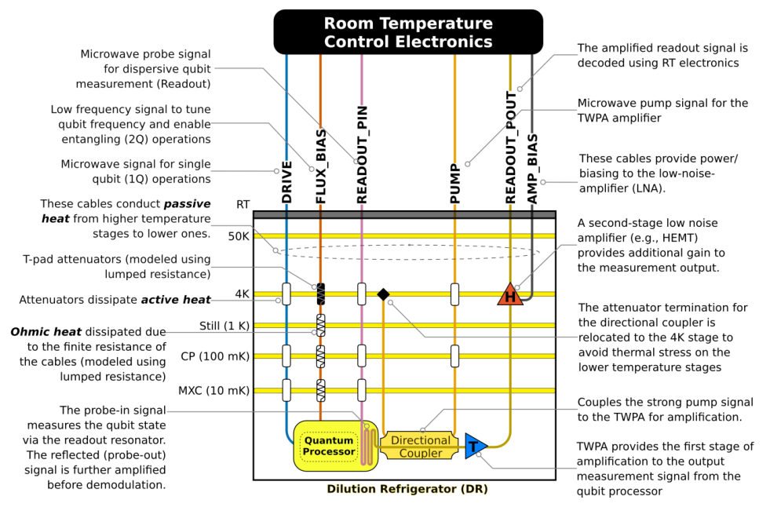
<figcaption class="paper-figure-caption"><b>Fig 1.</b> FIGURE 1. Simplified schematic of the cryogenic system in [8] consisting of the dilution refrigerator that houses the quantum processor and the supporting infrastructure. The major heat loads arise from heat conduction via the metallic cables (passive heat loads), heat dissipation through attenuators and amplifiers (active heat loads), and Joule heating (ohmic heat loads). Components with negligible heat footprint (e.g., circulators, filters, isolators) are not shown for simplicity.</figcaption>
</figure>
<figure class="paper-figure-card">
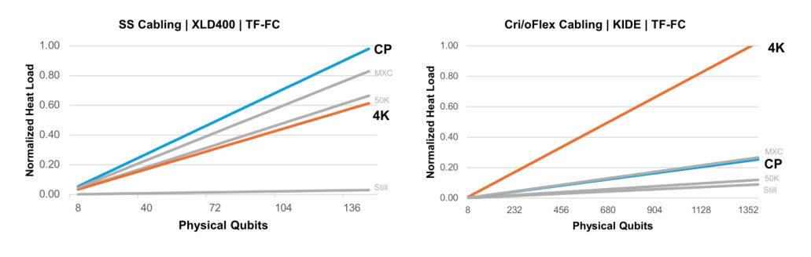
<figcaption class="paper-figure-caption"><b>Fig 2.</b> FIGURE 2. Normalized heat loads at different temperature stages under two wiring assumptions for the system in [8]. (left) Reproduced scalability trend for the stainless-steel wiring architecture considered in [8]. In this case, the millikelvin stages dominate because stainless-steel drive and flux-bias cables introduce large passive and ohmic heat loads. (right) Hypothetical replacement of stainless-steel cables with Cri/oFlex wiring [12] and upgrading the fridge to KIDE. Higher-capacity refrigeration and lower-PHL cabling increase the qubit count, but more importantly they change the scaling trend and shift the dominant bottleneck toward the 4 K stage. This shift motivates explicit...</figcaption>
</figure>
<figure class="paper-figure-card">
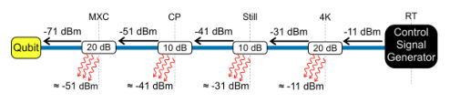
<figcaption class="paper-figure-caption"><b>Fig 3.</b> FIGURE 3. Active heat dissipation in attenuators along the DRIVE line during a single-qubit (1Q) operation. Each attenuator is assumed to dissipate all incident power as heat (pessimistic estimation). The DRIVE line has a total attenuation of 60 dB, distributed across multiple temperature stages. A 1Q operation requires −71 dBm of average power delivered to the qubit at the MXC [8]. The input power at each attenuator at different temperature stages along the drive line is obtained by propagating this value upstream from the MXC stage. As a result, the control signals generated at RT require an average power of −11 dBm.</figcaption>
</figure>
<figure class="paper-figure-card">
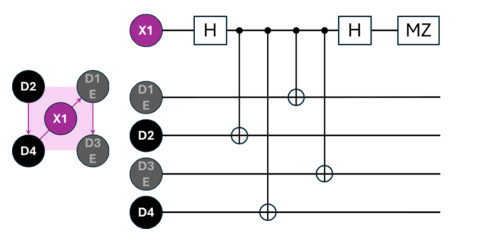
<figcaption class="paper-figure-caption"><b>Fig 4.</b> FIGURE 4. ESM operations for an X-ancilla qubit (left) and a Z-ancilla qubit (right). H: Hadamard; MZ: Z-basis measurement</figcaption>
</figure>
<figure class="paper-figure-card">
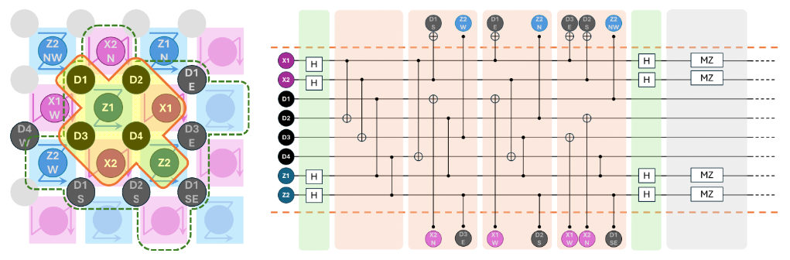
<figcaption class="paper-figure-caption"><b>Fig 5.</b> FIGURE 5. A rotated surface-code patch of distance 3 is enclosed in dashed green boundary (left). It consists of a tileable 8-qubit unit cell outlined in orange with yellow fill. ESM circuit (right) using both CNOT and CZ gates for the 8-qubit unit cell. All gates within the colored shaded regions are performed simultaneously (green: Hadamard gates, orange: entangling CX/CZ gates, gray: measurement operations).</figcaption>
</figure>
</div>

<p><strong>Summary.</strong> This paper revisits the thermal limits of superconducting quantum computers by developing an advanced heat estimation model. It demonstrates that previously overlooked heat sources, particularly from readout amplifiers and wiring resistance, create a dominant thermal bottleneck. The findings are critical for designing viable, large-scale cryogenic quantum hardware.</p>
<p><strong>Why it may be interesting.</strong> This work directly addresses hardware limitations in scaling quantum computation, which is crucial for any theoretical physicist working on open quantum systems or building complex quantum architectures.</p>
<details>
<summary>Detailed structure</summary>
<p><strong>Main problem.</strong> The readout amplification chain imposes a critical thermal scalability bottleneck that limits the size of superconducting quantum processors.</p>
<p><strong>Main result.</strong> Amplifier-associated heat emerges as the dominant thermal bottleneck in modern large-scale cryogenic systems, requiring new modeling approaches to predict true qubit capacity.</p>
<p><strong>Method.</strong> The authors developed an improved system-level thermal estimation model that fully accounts for active dissipation, passive conduction, and Joule heating across multiple cryogenic stages.</p>
<p><strong>Model / system.</strong> The study models superconducting quantum processors housed in a dilution refrigerator (DR) with distinct temperature stages ($  ext{RT}$ down to $\sim 10	ext{ mK}$). The model calculates the total normalized heat load by summing contributions from cables, attenuators, and amplifiers.</p>
<p><strong>Key observables.</strong> Total Normalized Heat Load ($  ext{NHL}_{  ext{THL},s}$) at each cryogenic stage; maximum supported physical qubit capacity.</p>
<p><strong>Important parameters / regimes.</strong> Active dissipation, passive conduction coefficients, Joule heating resistance/currents, target scale (e.g., 10k qubits).</p>
<p><strong>Assumptions / limitations.</strong> Previous models are criticized for omitting or underestimating the combined heat load from the readout amplifier chain, leading to overestimation of scalability.</p>
<p><strong>Figures summary.</strong> Figure 2 compares two scalability trends: one dominated by passive heat load (SS wiring) and a second showing bottleneck migration towards the $4	ext{ K}$ stage with modern components.</p>
<p><strong>Paper structure.</strong> The paper introduces the thermal bottleneck problem, details the improved unified modeling framework incorporating all major heat sources, analyzes cross-technology trade-offs, and concludes by evaluating pathways toward large single-fridge systems.</p>
</details>
<details>
<summary>Abstract</summary>
<p>The readout amplification chain imposes a critical thermal scalability bottleneck in large-scale superconducting quantum systems. This happens through three mechanisms: amplifier dissipation, passive conduction through bias wiring and Joule heating within that same wiring. These terms are absent or only partially represented in several prior system-level thermal-scalability models, leading to bottleneck misidentification and scalability overestimation. In this work, we improve upon previous system-level heat estimation models by fully accounting for the major heat sources in modern cryogenic quantum systems including the active dissipation, passive conduction, and Joule heating in the readout amplifier module. Our analysis demonstrates that amplifier-associated heat emerges as the dominant thermal bottleneck that fundamentally alters the thermal landscape of modern large-scale cryogenic systems. We explore various technology options and their tradeoffs to identify configurations that reduce this critical heat load and improve scalability. Finally, we evaluate forward-looking system configurations, including larger refrigeration platforms and optical approaches, and analyze forward-looking pathways toward single-fridge 10k-qubit cryogenic systems.</p>
</details>
<p><sub><a href="#top">↑ back to top</a></sub></p>

<p><a id="paper-2608.01817"></a></p>
<h3 id="emergent-modular-luttinger-liquid-from-spin-partitioned-entanglement-in-the-one-dimensional-hubbard-model"><a href="http://arxiv.org/abs/2608.01817v1">Emergent modular Luttinger liquid from spin-partitioned entanglement in the one-dimensional Hubbard model</a></h3>
<p><strong>Authors:</strong> Ádám Bácsi, Catalin Pascu Moca, Balázs Dóra<br>
<strong>Type:</strong> theory · <strong>Category:</strong> strongly correlated electrons · <strong>PDF:</strong> <a href="https://arxiv.org/pdf/2608.01817v1">https://arxiv.org/pdf/2608.01817v1</a><br>
<strong>Analysis basis:</strong> full PDF text, analyzed in chunks
<strong>Topic relevance:</strong> 🔥 <code>entanglement &amp; information structure</code> <strong>4/5</strong> · <code>analog quantum simulation</code> <strong>2/5</strong> · <code>exotic spin models in light-matter</code> <strong>1/5</strong> · <code>non-equilibrium dynamics</code> <strong>1/5</strong></p>
<div class="figure-strip-hint">↔ Scroll figures horizontally</div>
<div class="paper-figures-scroll">
<figure class="paper-figure-card">
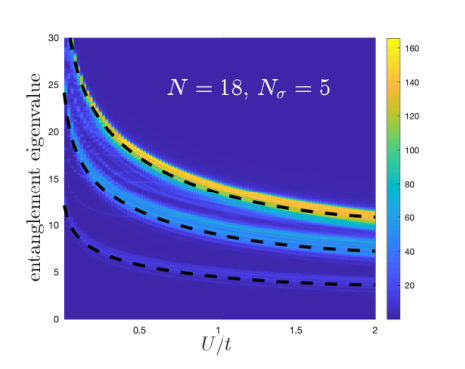
<figcaption class="paper-figure-caption"><b>Fig 1.</b> FIG. 2. Density plot of the evolution of the entanglement density of states, constructed from the first 400 largest eigen- values of the reduced density matrix out of the possible 18 5  , revealing the structures in the entanglement eigenvalues. The dashed lines denote the bosonization results from Eq. (8). The contribution of even larger eigenvalues can safely be neglected to the spin entanglement entropy.</figcaption>
</figure>
<figure class="paper-figure-card">
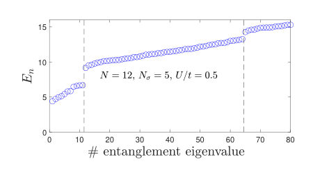
<figcaption class="paper-figure-caption"><b>Fig 2.</b> FIG. 1. Representative visualization of the first 80 eigenvalues of the entanglement Hamiltonian, displaying the branching property of the spectrum. In particular, the first 11 and second 53 eigenvalues make the 1st and 2nd branch, respectively, separated by black dashed lines.</figcaption>
</figure>
<figure class="paper-figure-card">
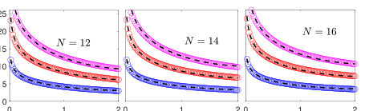
<figcaption class="paper-figure-caption"><b>Fig 3.</b> FIG. 3. The average entanglement eigenvalue of the first 3 lowest branches are plotted for N↑= N↓= 5 particles with increasing system size. The black dashed lines denote the bosonization results from Eq. (8), predicting β ∼ln(t/U) in the weak coupling limit.</figcaption>
</figure>
<figure class="paper-figure-card">
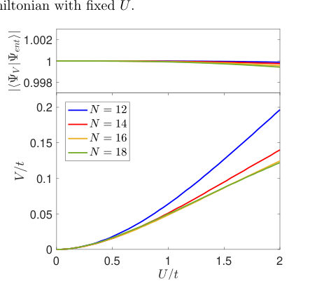
<figcaption class="paper-figure-caption"><b>Fig 4.</b> FIG. 4. The overlap of the ground state LL wavefunction of Eq. (15), |ΨV ⟩, and the ground state wavefunction of the spin entanglement Hamiltonian of the Hubbard model, |Ψent⟩, is shown from many-body ED in the upper panel, for the V −U combinations in the lower panel. Here, N↑= N↓= 5, and this is also the number of particles in the t −V model. The two wavefunctions for several system sizes are practically equivalent to each other.</figcaption>
</figure>
</div>

<p><strong>Summary.</strong> This work analyzes the entanglement structure of the 1D repulsive Hubbard model by examining the reduced density matrix after partitioning one spin species. The authors find that this leads to a modular Luttinger liquid whose correlations are governed by a single effective parameter, $\sqrt{K_c K_s}$. This demonstrates a universal principle: even when tracing out degrees of freedom, the entanglement structure retains critical algebraic correlations characteristic of 1D quantum liquids.</p>
<p><strong>Why it may be interesting.</strong> The concept of an 'entanglement Hamiltonian' provides a powerful tool to characterize entanglement in interacting quantum systems. Finding that this modular structure is robust and yields a simple geometric mean for the correlation parameter offers deep insights into how entanglement encodes underlying symmetries, which is relevant for understanding exotic phases in correlated materials.</p>
<details>
<summary>Detailed structure</summary>
<p><strong>Main problem.</strong> The study aims to determine the universal low-energy entanglement Hamiltonian associated with a spin partition in an interacting one-dimensional metal, specifically investigating its structure when tracing out one spin species from the Hubbard model.</p>
<p><strong>Main result.</strong> Tracing out one spin species yields a modular Luttinger liquid whose effective correlation is governed by a single parameter equal to the geometric mean of the charge and spin Luttinger parameters. This reveals a universal modular structure in 1D fermionic systems.</p>
<p><strong>Method.</strong> The authors combine bosonization techniques with exact diagonalization (ED) methods to calculate the reduced density matrix for one spin species, leading to the definition and analysis of an entanglement Hamiltonian.</p>
<p><strong>Model / system.</strong> The primary system is the one-dimensional repulsive Hubbard model. The analysis proceeds by mapping the interacting fermionic problem onto bosonic fields via bosonization, allowing for the calculation of entanglement properties.</p>
<p><strong>Key observables.</strong> Entanglement entropy, entanglement spectrum (eigenvalues of $H_{	ext{ent}}$), and Luttinger parameters ($K_c, K_s$).</p>
<p><strong>Important parameters / regimes.</strong> The effective single LL parameter $\sqrt{K_c K_s}$, the repulsive interaction strength $U$, and the hopping amplitude $t$.</p>
<p><strong>Assumptions / limitations.</strong> The analysis relies on bosonization techniques and assumes that the reduced density matrix is Gaussian-structured, which is valid for the quadratic nature of the bosonized theory.</p>
<p><strong>Figures summary.</strong> Figures visualize the universal branching hierarchy in the entanglement spectrum (Fig. 1) and show the evolution of the entanglement density of states compared to bosonization predictions (Fig. 2).</p>
<p><strong>Paper structure.</strong> The paper first establishes the theoretical framework by defining the reduced density matrix for one spin species ($
ho_\uparrow$) and deriving the associated entanglement Hamiltonian ($H_{   ext{mod}}$). It then applies this formalism to the Hubbard model, using bosonization results to predict universal properties like the effective Luttinger parameter and the branching structure of the spectrum.</p>
</details>
<details>
<summary>Abstract</summary>
<p>We study the spin-partitioned entanglement Hamiltonian of the one-dimensional repulsive Hubbard model. By combining bosonization with exact diagonalization, we show that tracing out one spin species produces a modular Luttinger liquid, whose properties fundamentally differ from those of the physical system. While the modular spectrum is fully dispersionless and possesses a momentum-independent entanglement gap, its eigenstates exhibit algebraic correlations governed by a single effective Luttinger parameter equal to the geometric mean of the charge and spin Luttinger parameters. The resulting entanglement spectrum displays a universal branching hierarchy in excellent agreement with exact diagonalization. We further demonstrate that the modular ground state is nearly identical to that of the spinless Luttinger liquid. These results uncover a universal modular structure in interacting one-dimensional fermionic systems.</p>
</details>
<p><sub><a href="#top">↑ back to top</a></sub></p>

<p><a id="paper-2608.01939"></a></p>
<h3 id="oraqle-an-empirical-analysis-of-qubit-readout-and-discriminators-in-quantum-error-correction"><a href="http://arxiv.org/abs/2608.01939v1">Oraqle: An Empirical Analysis of Qubit Readout and Discriminators in Quantum Error Correction</a></h3>
<p><strong>Authors:</strong> Emmanouil Giortamis, Aleksandra Świerkowska, Sandra Stankovic, Felix Gust, Benjamin Lienhard, Pramod Bhatotia<br>
<strong>Type:</strong> both · <strong>Category:</strong> quantum information and computing · <strong>PDF:</strong> <a href="https://arxiv.org/pdf/2608.01939v1">https://arxiv.org/pdf/2608.01939v1</a><br>
<strong>Analysis basis:</strong> full PDF text, analyzed in chunks
<strong>Topic relevance:</strong> 🔥 <code>QC/QI experiment</code> <strong>4/5</strong> · <code>quantum measurements</code> <strong>2/5</strong> · <code>methods for driven-dissipative</code> <strong>1/5</strong></p>
<div class="figure-strip-hint">↔ Scroll figures horizontally</div>
<div class="paper-figures-scroll">
<figure class="paper-figure-card">
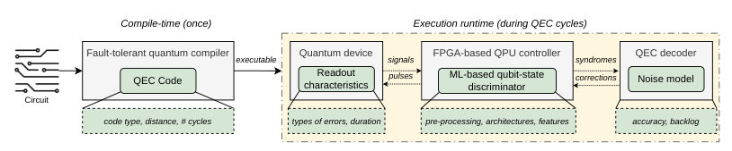
<figcaption class="paper-figure-caption"><b>Fig 1.</b> Fig. 1. Lifetime of a QEC-protected application. Our framework-based analysis covers the elements in green.</figcaption>
</figure>
<figure class="paper-figure-card">
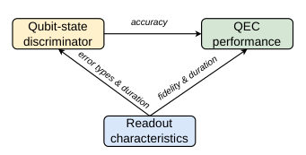
<figcaption class="paper-figure-caption"><b>Fig 2.</b> Fig. 2. Readout characteristics drive both the qubit-state discriminator and QEC per- formance, and the discriminator further shapes QEC performance.</figcaption>
</figure>
<figure class="paper-figure-card">
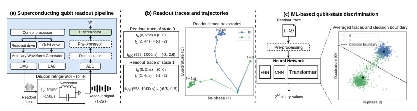
<figcaption class="paper-figure-caption"><b>Fig 3.</b> Fig. 3. Qubit-state readout pipeline (§ 2). (a) The signal is processed before a discriminator produces a binary outcome. (b) The trace forms a 2D IQ trajectory over the measurement window. (c) An ML-based discriminator clusters the trajectories and learns a decision boundary to output the qubit state.</figcaption>
</figure>
<figure class="paper-figure-card">
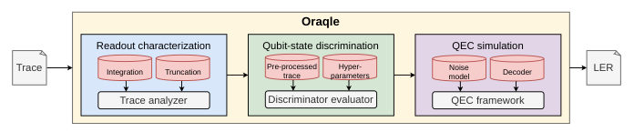
<figcaption class="paper-figure-caption"><b>Fig 4.</b> Fig. 4. Oraqle overview. Oraqle supports diverse trace analysis passes, discriminators, and QEC frameworks.</figcaption>
</figure>
<figure class="paper-figure-card">
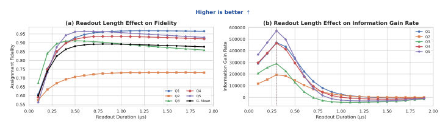
<figcaption class="paper-figure-caption"><b>Fig 5.</b> Fig. 6. Measurement duration effect on assignment fidelity (§ 4.1). (a) Geometric-mean baseline fidelity rises until 𝑡≈0.5𝜇s, then plateaus (Q1, Q2, Q4) or declines (Q3, Q5). (b) The information-gain rate peaks at 𝑡≈0.3𝜇s and turns negative beyond 𝑡≈1𝜇s.</figcaption>
</figure>
</div>

<p><strong>Summary.</strong> This paper presents Oraqle, a comprehensive framework to benchmark the entire readout-to-QEC pipeline for superconducting qubits. It systematically analyzes how measurement duration, machine learning discriminators, and QEC codes interact to determine the final logical error rate. The key takeaway is that hardware optimization should focus on reducing readout latency rather than over-engineering the classical decoding model.</p>
<p><strong>Why it may be interesting.</strong> It provides concrete, quantitative guidelines for optimizing the physical implementation layer (readout electronics and ML) that directly impacts the theoretical performance limits of fault-tolerant quantum computation.</p>
<details>
<summary>Detailed structure</summary>
<p><strong>Main problem.</strong> The performance of Quantum Error Correction (QEC) is critically dependent on the readout process, but this co-dependence between readout characteristics, ML discriminators, and QEC performance has not been deeply studied.</p>
<p><strong>Main result.</strong> The study reveals that measurement duration can be significantly reduced with minimal logical error rate penalty, and discriminator complexity is largely irrelevant as residual errors are dominated by device physics.</p>
<p><strong>Method.</strong> The authors introduce Oraqle, an end-to-end benchmarking framework that systematically evaluates the entire pipeline from raw qubit readout traces through ML discrimination to final QEC performance metrics.</p>
<p><strong>Model / system.</strong> The work focuses on superconducting qubits operating in the dispersive regime. The system involves a full cycle: ancilla readout $
ightarrow$ ML decoding $
ightarrow$ error correction, tested across multiple QEC codes (e.g., Surface, Color).</p>
<p><strong>Key observables.</strong> Logical Error Rate (LER), Readout Fidelity ($F_{5Q}$), and the raw IQ trace data used for classification.</p>
<p><strong>Important parameters / regimes.</strong> Measurement duration ($\mu$s scale), discriminator complexity/model size, and the specific QEC code structure.</p>
<p><strong>Assumptions / limitations.</strong> The analysis compares current hardware limitations with projected device capabilities across various noise models (e.g., decoherence-only vs. full flip error).</p>
<p><strong>Figures summary.</strong> Figures compare LER versus measurement duration under different noise assumptions, demonstrating that readout flip errors are the primary driver of performance degradation at short timescales.</p>
<p><strong>Paper structure.</strong> The paper establishes the QEC cycle and identifies readout as a bottleneck; it then introduces Oraqle to benchmark the entire stack across multiple codes and hardware regimes, culminating in three key findings regarding measurement time, discriminator role, and maturity dependence.</p>
</details>
<details>
<summary>Abstract</summary>
<p>Quantum error correction (QEC) is the most promising route toward fault-tolerant quantum computing and, thus, useful quantum computers. QEC operates as a continuous measure-decode-correct cycle: ancilla qubits are read out, a decoder infers errors from the resulting syndromes, and corrections are applied before the next round begins. Within this loop, readout occupies a uniquely critical role, as it is the sole source of ground truth available to the decoder. Yet readout is also the slowest and most error-prone operation in the stack, with characteristics that vary across qubits and drift over time; This complexity propagates directly to the classical control hardware, and in particular to the FPGA-hosted machine-learning (ML) discriminator that must classify each analog signal into a binary syndrome outcome. Despite this central role, QEC performance has not yet been studied in depth from the perspective of readout characteristics, readout length, and their co-design with an ML discriminator.   We introduce Oraqle, an end-to-end benchmarking framework that evaluates qubit-state readout and its impact on QEC performance across real experimentally extracted qubit-state-readout datasets, state-of-the-art ML discriminators, multiple QEC codes, and hardware regimes spanning current to projected devices. Our study reveals three asymmetric findings: The measurement duration can be significantly reduced with nearly no penalty to the logical error rate; The discriminator complexity barely affects the QEC performance, as residual errors are written into device physics rather than the model; and the impact of qubit-state readout on the logical error rate is conditional on where the hardware sits in the QEC landscape, a window that widens as devices mature.</p>
</details>
<p><sub><a href="#top">↑ back to top</a></sub></p>

<p><a id="paper-2608.01084"></a></p>
<h3 id="toward-compact-fiber-in-line-nonlinear-devices-via-highly-efficient-nanophotonic-cavity-interface"><a href="http://arxiv.org/abs/2608.01084v1">Toward Compact Fiber In-line Nonlinear Devices via Highly Efficient Nanophotonic Cavity Interface</a></h3>
<p><strong>Authors:</strong> Mahsa Haddadi Moghaddam, Kirlie Iulius Figuera Michal, Sangwoo Lee, Sijin Sung, Jongwon Lee, Hyeong-Ryeol Park, Je-Hyung Kim<br>
<strong>Type:</strong> experiment · <strong>Category:</strong> other · <strong>PDF:</strong> <a href="https://arxiv.org/pdf/2608.01084v1">https://arxiv.org/pdf/2608.01084v1</a><br>
<strong>Analysis basis:</strong> full PDF text, analyzed in chunks
<strong>Topic relevance:</strong> 🔥 <code>quantum optics experiment</code> <strong>4/5</strong> · <code>QC/QI experiment</code> <strong>1/5</strong> · <code>correlated cavity matter</code> <strong>1/5</strong> · <code>interference shaping light</code> <strong>1/5</strong></p>
<div class="figure-strip-hint">↔ Scroll figures horizontally</div>
<div class="paper-figures-scroll">
<figure class="paper-figure-card">
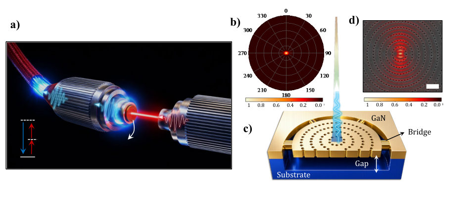
<figcaption class="paper-figure-caption"><b>Fig 1.</b> Figure 1. (a) Schematic of the fiber-integrated frequency-conversion device, in which a GaN</figcaption>
</figure>
<figure class="paper-figure-card">
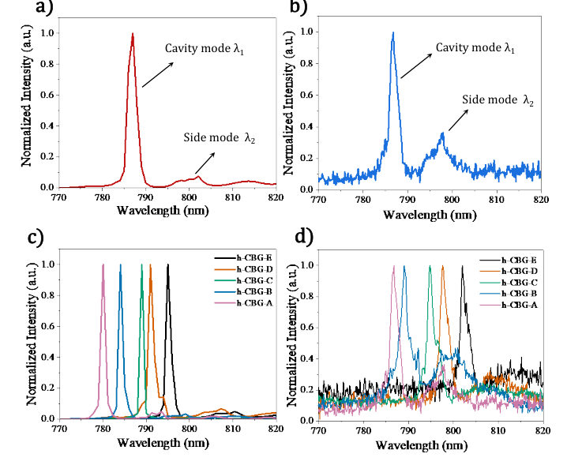
<figcaption class="paper-figure-caption"><b>Fig 2.</b> Figure 2. (a) Simulated and (b) measured cavity-mode intensity of h-CBG-B as a function of</figcaption>
</figure>
<figure class="paper-figure-card">
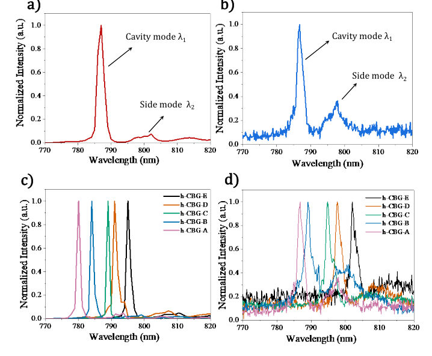
<figcaption class="paper-figure-caption"><b>Fig 3.</b> Figure 2a and 2b compare the simulated and experimentally measured cavity mode spectra. In</figcaption>
</figure>
<figure class="paper-figure-card">
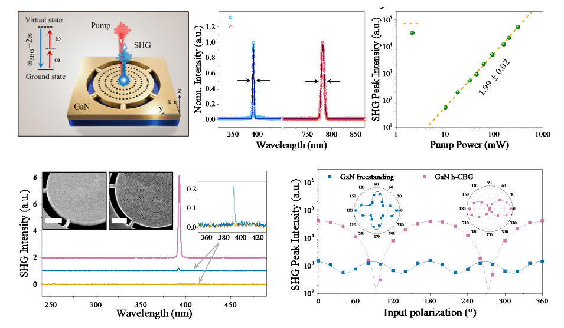
<figcaption class="paper-figure-caption"><b>Fig 4.</b> Figure 3. (a) Schematic illustration of the SHG generation from a GaN h-CBG membrane</figcaption>
</figure>
<figure class="paper-figure-card">
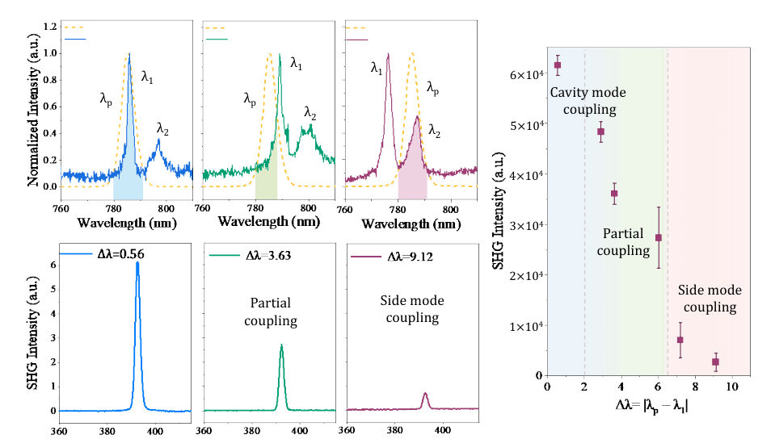
<figcaption class="paper-figure-caption"><b>Fig 5.</b> Figure 4. Cavity-mode spectra (top) and corresponding SHG intensity (bottom) for different</figcaption>
</figure>
</div>

<p><strong>Summary.</strong> The research presents a method to create compact, high-efficiency nonlinear optical devices by integrating Gallium Nitride (GaN) hole-type circular Bragg grating cavities onto standard optical fibers. By leveraging the cavity's resonant enhancement and directional coupling, they achieved significantly boosted Second-Harmonic Generation signals. This establishes a practical and scalable platform for incorporating strong nonlinearity into fiber-based quantum and classical photonic systems.</p>
<p><strong>Why it may be interesting.</strong> This work is highly relevant to quantum optics and open quantum systems because it provides a solid platform for generating strong nonlinear light sources (like entangled photons or frequency-converted light) directly within standard telecom fibers, which is crucial for building quantum communication networks.</p>
<details>
<summary>Detailed structure</summary>
<p><strong>Main problem.</strong> The challenge is achieving compact and efficient frequency conversion, specifically Second-Harmonic Generation (SHG), within optical fibers for advanced nonlinear and quantum photonic technologies.</p>
<p><strong>Main result.</strong> The authors successfully demonstrated a scalable approach by integrating a Gallium Nitride (GaN) hole-type circular Bragg grating (h-CBG) cavity directly onto an optical fiber, achieving drastically enhanced SHG signals.</p>
<p><strong>Method.</strong> They utilized deterministic pick-and-place transfer techniques to integrate the fabricated GaN h-CBG membrane cavity onto a standard fiber core and characterized performance using pulsed laser spectroscopy.</p>
<p><strong>Model / system.</strong> The physical system is an all-fiber integrated nonlinear device based on a GaN h-CBG structure. This grating acts as a resonant cavity, confining light fields to enhance the second-order nonlinear susceptibility ($\chi^2$) interaction for SHG generation.</p>
<p><strong>Key observables.</strong> SHG signal enhancement factor (up to $\sim 32	imes$ vs. freestanding membrane), resonance wavelength ($\approx 784 	ext{ nm}$), and power-normalized conversion efficiency ($3.62 	imes 10^{-3} 	ext{ W}^{-1}$).</p>
<p><strong>Important parameters / regimes.</strong> GaN material properties, cavity geometry parameters (e.g., radial period $r$, hole size $a$), and pump wavelength ($\approx 784 	ext{ nm}$ for SHG at $\lambda/2$).</p>
<p><strong>Assumptions / limitations.</strong> The efficiency calculations rely on estimating peak intensity from average power measurements using the known pulse characteristics of the Ti:Sapphire laser.</p>
<p><strong>Figures summary.</strong> Figures illustrate the device schematic, simulated far-field radiation patterns showing directional out-coupling, measured cavity mode spectra confirming resonance at $784 	ext{ nm}$, and setups detailing both SHG measurement and the deterministic fiber transfer process.</p>
<p><strong>Paper structure.</strong> The paper details the fabrication of GaN h-CBG membranes via etching, characterizes the resonant optical properties using spectroscopy, demonstrates the high efficiency of SHG generation within the cavity structure, and concludes with a successful demonstration of robust, in-line integration onto an optical fiber platform.</p>
</details>
<details>
<summary>Abstract</summary>
<p>Compact and efficient frequency conversion within optical fibers is highly desirable for nonlinear and quantum photonic technologies, yet it remains challenging due to weak nonlinear interactions and limited coupling efficiencies onto optical fibers. Here, we demonstrate resonantly enhanced second-harmonic generation (SHG) through the all-fiber integration of a gallium nitride (GaN) hole-type circular Bragg grating (h-CBG) cavity, directly transferred onto a standard optical fiber. Together with the large second-order nonlinear susceptibility and wide optical transparency window of GaN, the fabricated h-CBG membrane cavity on GaN enables strong field confinement and vertically directional out-coupling of the generated SHG signal. As a result, we observe drastically enhanced SHG signals from the h-CBG device compared with the bulk GaN and the unpatterned freestanding GaN membrane. Using a deterministic pick-and-place transfer technique, we demonstrate robust and precise fiber integration of the GaN cavity device, enabling in-line SHG generation from a conventional fiber platform. This work establishes a compact and scalable approach for incorporating optical nonlinearity into fiber-based photonic systems.</p>
</details>
<p><sub><a href="#top">↑ back to top</a></sub></p>

<p><a id="paper-2608.01317"></a></p>
<h3 id="analytic-qubit-separation-between-povms-and-projective-measurements"><a href="http://arxiv.org/abs/2608.01317v1">Analytic Qubit Separation between POVMs and Projective Measurements</a></h3>
<p><strong>Authors:</strong> Lin Zhu, Ranyiliu Chen, Xin Wang<br>
<strong>Type:</strong> theory · <strong>Category:</strong> quantum information and computing · <strong>PDF:</strong> <a href="https://arxiv.org/pdf/2608.01317v1">https://arxiv.org/pdf/2608.01317v1</a><br>
<strong>Analysis basis:</strong> full PDF text, analyzed in chunks
<strong>Topic relevance:</strong> 🔥 <code>quantum measurements</code> <strong>4/5</strong> · <code>entanglement &amp; information structure</code> <strong>1/5</strong> · <code>measurement-induced transitions</code> <strong>1/5</strong></p>
<div class="figure-strip-hint">↔ Scroll figures horizontally</div>
<div class="paper-figures-scroll">
<figure class="paper-figure-card">
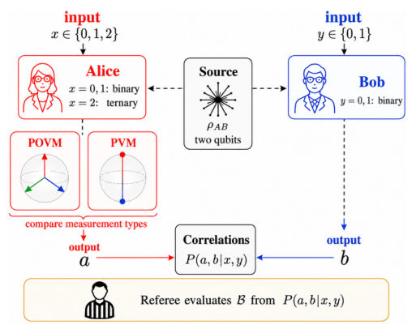
<figcaption class="paper-figure-caption"><b>Fig 1.</b> FIG. 1. Bell scenario for comparing qubit POVMs with qubit projective measurements. A source distributes a two-qubit state ρAB to Alice and Bob. Alice receives x ∈{0, 1, 2}, where x = 0, 1 label binary measurements and x = 2 labels a ternary measurement. Bob receives y ∈{0, 1} and performs a binary measurement. Their outputs determine conditional probabili- ties P(a, b | x, y), which are evaluated by the Bell functional B. In the separating strategy, Alice’s ternary measurement is a genuine qubit POVM, whereas every measurement in the fixed-qubit comparison class is projective.</figcaption>
</figure>
</div>

<p><strong>Summary.</strong> This paper rigorously proves that general Positive Operator-Valued Measures (POVMs) can achieve correlations strictly greater than those achievable by projective measurements (PVMs) when local dimensions are fixed. The separation is quantified using a novel Bell functional and proven analytically via advanced algebraic techniques, establishing a fundamental resource difference in quantum measurement theory.</p>
<p><strong>Why it may be interesting.</strong> This work provides a highly rigorous mathematical tool—an analytic Bell functional with an exact certificate—to quantify fundamental differences between measurement models in quantum information theory, which is crucial for understanding device capabilities.</p>
<details>
<summary>Detailed structure</summary>
<p><strong>Main problem.</strong> The paper aims to establish a rigorous, analytic separation between correlations achievable by general quantum measurements (POVMs) and those restricted to projective measurements (PVMs) in a bipartite setting.</p>
<p><strong>Main result.</strong> An explicit qubit POVM was constructed whose Bell value strictly exceeds the upper bound derived for all possible qubit PVM strategies over arbitrary shared two-qubit states, establishing a certified gap greater than 1/1000.</p>
<p><strong>Method.</strong> The separation is formalized using a specialized Bell functional and proven analytically through advanced mathematical techniques, including the use of exact level-3 noncommutative sum-of-squares (SOS) certificates in an algebraic framework.</p>
<p><strong>Model / system.</strong> The study analyzes correlations in a finite bipartite setting involving shared two-qubit states ($
ho_{AB}$), comparing measurement outcomes from general POVMs versus restricted PVMs on qubits.</p>
<p><strong>Key observables.</strong> Bell functional value $B$, the quantum maximum $\Omega = 2\sqrt{2} + 1/100$, and the upper bound for qubit PVM strategies.</p>
<p><strong>Important parameters / regimes.</strong> Local dimension (fixed vs. unrestricted), the small parameter $\epsilon$ used in constructing the separating functional, and the specific structure of the two-qubit state.</p>
<p><strong>Assumptions / limitations.</strong> The separation is only meaningful when local dimensions are constrained; otherwise, Naimark's theorem allows dilation to remove the distinction.</p>
<p><strong>Figures summary.</strong> Figure 1 illustrates the Bell scenario comparing qubit POVMs vs. qubit projective measurements using a specific functional $B$, and Table I summarizes benchmark values for different measurement types.</p>
<p><strong>Paper structure.</strong> The paper progresses from defining the physical problem (POVM vs PVM separation) to constructing an explicit separating POVM, deriving the necessary algebraic bounds via SOS certificates, and finally proving that this constructed value attains the dimension-unrestricted quantum optimum.</p>
</details>
<details>
<summary>Abstract</summary>
<p>Generalized measurements can be implemented projectively after enlarging the Hilbert space, but this dilation changes the available local dimension. We construct a Bell functional with rational coefficients that separates the two measurement models at local dimension two. An explicit three-outcome qubit positive-operator-valued measure with rational matrix entries attains $2\sqrt2+1/100$. On the other hand, all qubit-projective strategies are bounded by $2\sqrt2+\sqrt5/250+\sqrt2/32400$, giving a fully analytic certified gap greater than $1/1000$. To our knowledge, this is the first fully analytic Bell-functional separation between qubit POVMs and qubit projective measurements over arbitrary shared two-qubit states. Lean certificate for the separation theorem is provided for completeness. Separately, an exact level-3 noncommutative sum-of-squares certificate proves that the explicit qubit strategy attains the unrestricted finite-dimensional tensor-product quantum optimum.</p>
</details>
<p><sub><a href="#top">↑ back to top</a></sub></p>

<p><a id="paper-2608.00165"></a></p>
<h3 id="arbitrary-distance-quantum-error-correction-with-gausss-law-for-math409math-lattice-gauge-theory"><a href="http://arxiv.org/abs/2608.00165v1">Arbitrary-Distance Quantum Error Correction with Gauss's Law for $\mathbb Z_2$ Lattice Gauge Theory</a></h3>
<p><strong>Authors:</strong> Neel S. Modi, Lento Nagano, Masazumi Honda, Nobuyuki Yoshioka, Christian W. Bauer<br>
<strong>Type:</strong> theory · <strong>Category:</strong> quantum information and computing · <strong>PDF:</strong> <a href="https://arxiv.org/pdf/2608.00165v1">https://arxiv.org/pdf/2608.00165v1</a><br>
<strong>Analysis basis:</strong> full PDF text, analyzed in chunks
<strong>Topic relevance:</strong> 🔥 <code>analog quantum simulation</code> <strong>4/5</strong> · <code>entanglement &amp; information structure</code> <strong>1/5</strong> · <code>exotic spin models in light-matter</code> <strong>1/5</strong></p>
<div class="figure-strip-hint">↔ Scroll figures horizontally</div>
<div class="paper-figures-scroll">
<figure class="paper-figure-card">
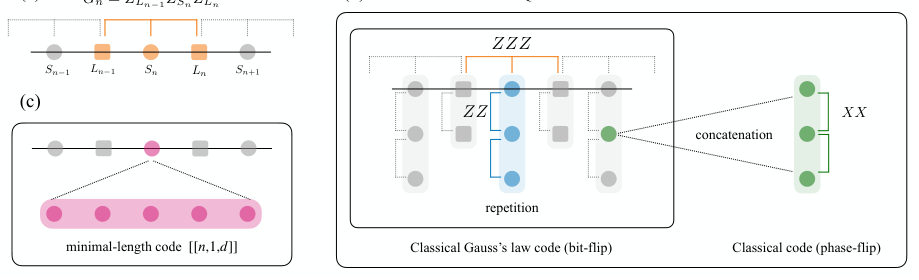
<figcaption class="paper-figure-caption"><b>Fig 1.</b> FIG. 1. Summary of this paper. We depict the 1D example for simplicity, but we also give 2D results in the main text. (a) 1D lattice for Z2 LGT. The square symbol is a link variable (gauge field) and the circle is a site variable (matter field). Each Gauss’s law constraint is a parity check between a site and two adjacent links, as highlighted in orange. (b) construction of the classical and quantum Gauss’s law code. Classical Gauss’s law duplicates sites and links with Gauss’s law to build Z-type stabilizers, and is concatenated with X-type classical codes to yield a quantum Gauss’s law code with prescribed code distance. (c) Generic (domain-agnostic) QEC encoding used as a baseline for...</figcaption>
</figure>
<figure class="paper-figure-card">
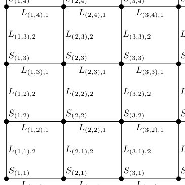
<figcaption class="paper-figure-caption"><b>Fig 2.</b> FIG. 2. Example 4 × 4 lattice in two spatial dimensions, with periodic boundary conditions. The unique set of sites and links are shown, with an example indexing. The Hilbert space H for this lattice is spanned by every possible assignment of bits to the site and link variables, disregarding Gauss’s law constraints.</figcaption>
</figure>
<figure class="paper-figure-card">
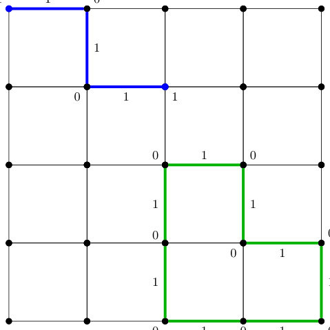
<figcaption class="paper-figure-caption"><b>Fig 3.</b> FIG. 5. Examples of flux strings that correspond to classical lattice configurations that satisfy Gauss’s law. The bits for each link and site along the string paths are shown. Blue: open string, contains matter excitations at the endpoints. Green: closed string, contains no matter excitations.</figcaption>
</figure>
<figure class="paper-figure-card">
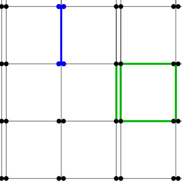
<figcaption class="paper-figure-caption"><b>Fig 4.</b> FIG. 11. Optimal code construction for distance d = 5. Each link or site (and any duplicate) corresponds to a single bit in the outer bit-flip code. Blue: logical error with weight 5 corresponding to an open string. Green: logical error with weight 5 corresponding to a closed string.</figcaption>
</figure>
<figure class="paper-figure-card">
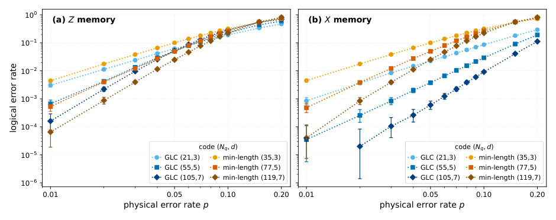
<figcaption class="paper-figure-caption"><b>Fig 5.</b> FIG. 12. Memory experiment for a 1D N = 4 lattice with the open boundary condition. The x-axis shows the physical error rate, and the y-axis is the logical error rate. Blue and red curves correspond to the Gauss’s-law code (GLC) and the minimal-length code (min-length), respectively. Each legend entry is labeled by (Nq, d), where Nq is the total number of physical qubits and d is the code distance. The left (right) panel focuses on the Z (X) memory experiment, if they can keep the Z (X) eigenstates. Monte-Carlo simulation is performed at each data point with Nshot = 2 × 105 shots, and LER is estimated as Nfail/Nshot. The error bar shows binomial likelihood-factor intervals with a maximum...</figcaption>
</figure>
</div>

<p><strong>Summary.</strong> This paper develops an advanced framework for Quantum Error Correction Codes (QECCs) tailored specifically for $\mathbb Z_2$ Lattice Gauge Theory. It generalizes the error correction capability from single-qubit errors to arbitrary $t$-qubit errors while optimizing resource usage. The work is significant because it provides a physically motivated, highly efficient code structure that outperforms standard methods in terms of Hamiltonian locality.</p>
<p><strong>Why it may be interesting.</strong> The explicit connection between lattice gauge theory constraints and robust quantum error correction provides a powerful physical realization of fault-tolerant quantum computation, which is highly relevant to building hardware simulators or actual quantum processors based on local interactions.</p>
<details>
<summary>Detailed structure</summary>
<p><strong>Main problem.</strong> The work generalizes quantum error correction codes (QECCs) based on $\mathbb Z_2$ Gauss's law constraints from correcting single-qubit errors to being robust against arbitrary $t$-qubit errors.</p>
<p><strong>Main result.</strong> The derived Gauss's law code excels at reducing the locality of the encoded Hamiltonian compared to domain-agnostic codes, and it reduces physical qubit overhead for small error thresholds ($t \le 3$).</p>
<p><strong>Method.</strong> The authors derive explicit constructions for these generalized codes by combining classical GL codes with X-type classical codes, followed by detailed calculations of the logical error rate using transfer matrix methods.</p>
<p><strong>Model / system.</strong> The physical system is $\mathbb Z_2$ Lattice Gauge Theory (LGT) coupled to matter on a lattice. The theory focuses on constructing stabilizer codes whose constraints are dictated by Gauss's law, which must be satisfied for the quantum state.</p>
<p><strong>Key observables.</strong> Code distance ($d$), encoding rate ($k/n$), physical qubit overhead, locality of the encoded Hamiltonian, and logical error rate (LER).</p>
<p><strong>Important parameters / regimes.</strong> $t$ (the maximum number of correlated errors corrected), $p$ (physical error rate for BSC), and lattice dimensionality (1D, 2D).</p>
<p><strong>Assumptions / limitations.</strong> The analysis often assumes uncorrelated X/Z noise when calculating the LER, and it compares results against linear codes.</p>
<p><strong>Figures summary.</strong> Figure 1 illustrates a 1D example of $\mathbb Z_2$ LGT showing site and link variables, alongside the construction principles for classical and quantum Gauss's law codes. Tables summarize performance metrics across different code constructions.</p>
<p><strong>Paper structure.</strong> The paper first establishes the theoretical framework by generalizing the error correction capability to arbitrary $t$-qubit errors. It then details the mathematical construction of the optimal Gauss's law code, followed by rigorous calculations comparing its performance (overhead, locality) against existing methods and calculating the LER for specific noise models.</p>
</details>
<details>
<summary>Abstract</summary>
<p>It has previously been shown by Rajput, Roggero, and Wiebe that $\mathbb Z_2$ Gauss's law constraints can be used to build efficient quantum error-correcting codes (QECCs) that are robust against arbitrary single-qubit errors. In this work, we generalize the construction to be robust against arbitrary $t$-qubit errors, where $t$ is any positive integer. This includes a derivation of the optimal Gauss's law code within the considered family by minimizing the number of physical qubits required for a given code distance. Finally, we compare our codes against other efficient QECCs on metrics such as the number of physical qubits, the locality of the encoded Hamiltonian, and the logical error rate in the code capacity setting. Compared to using a domain-agnostic code for every lattice degree of freedom, we find that the Gauss's law code primarily excels at reducing the locality of the encoded Hamiltonian. Moreover, the physical qubit overhead is also reduced for $t \le 3$ (distance $d \le 7$).</p>
</details>
<p><sub><a href="#top">↑ back to top</a></sub></p>

<p><a id="paper-2608.02007"></a></p>
<h3 id="benchmarking-the-fermionic-quasi-1d-many-body-problem"><a href="http://arxiv.org/abs/2608.02007v1">Benchmarking the fermionic quasi-1D many-body problem</a></h3>
<p><strong>Authors:</strong> Ekaterina Gradova, Fr{é}d{é}ric Chevy<br>
<strong>Type:</strong> theory · <strong>Category:</strong> quantum gases · <strong>PDF:</strong> <a href="https://arxiv.org/pdf/2608.02007v1">https://arxiv.org/pdf/2608.02007v1</a><br>
<strong>Analysis basis:</strong> full PDF text, analyzed in chunks
<strong>Topic relevance:</strong> 🔥 <code>analog quantum simulation</code> <strong>4/5</strong> · <code>Keldysh / 2PI / non-Gaussian methods</code> <strong>1/5</strong> · <code>methods for driven-dissipative</code> <strong>1/5</strong></p>
<div class="figure-strip-hint">↔ Scroll figures horizontally</div>
<div class="paper-figures-scroll">
<figure class="paper-figure-card">
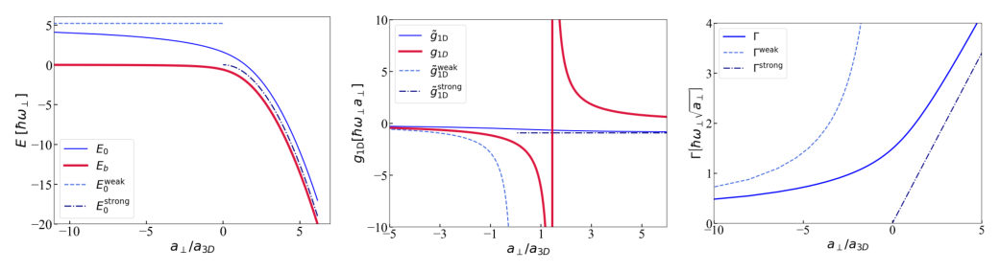
<figcaption class="paper-figure-caption"><b>Fig 1.</b> FIG. 1. Effective parameters of the coupled-channel Hamiltonian. From left to right: binding energy of bare molecules E0 (with EB given from equation 3), coupling constant in 1D g1D with coupling constant of contact interaction ˜g1D, coupling constant of molecular channel Γ. The terms “weak” and “strong” denote expansion in the weakly and strongly attractive limits, respectively, given in the main text. The effective parameters in these limits are shown as dashed-dot dark blue and dashed light blue curves, respectively.</figcaption>
</figure>
<figure class="paper-figure-card">
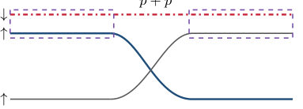
<figcaption class="paper-figure-caption"><b>Fig 2.</b> FIG. 2. The first-order three-body scattering diagram. The exchange of spin-down fermions occurs within the bare molec- ular state. The purple dashed rectangles represent a bare molecular state of two fermions with opposite spins</figcaption>
</figure>
<figure class="paper-figure-card">
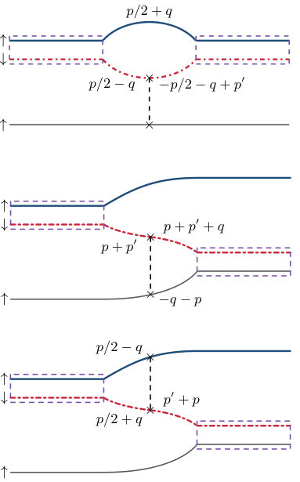
<figcaption class="paper-figure-caption"><b>Fig 3.</b> FIG. 3. Diagrams representing the action of the contact in- teraction at leading order on atom-dimer scattering. Conven- tions are identical to the Fig 2. The black vertical dashed lines indicate contact interactions between fermions.</figcaption>
</figure>
<figure class="paper-figure-card">
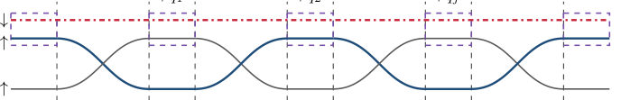
<figcaption class="paper-figure-caption"><b>Fig 4.</b> FIG. 4. Three-body interaction diagram. The purple dashed rectangles represent a bare molecular state of two fermions with opposite spins. qj labels the intermediate momenta.</figcaption>
</figure>
<figure class="paper-figure-card">
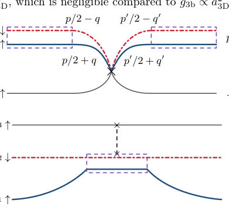
<figcaption class="paper-figure-caption"><b>Fig 5.</b> FIG. 5. Lower (i) and upper (ii) branches coupling. Up- per panel: impact of three-body emergent collisions on atom- dimer scattering. Lower panel: Impact of coupling between fermions and bare dimers on three-body scattering amplitude.</figcaption>
</figure>
</div>

<p><strong>Summary.</strong> The paper rigorously tests effective 1D models for fermionic quantum gases by comparing them against exact 3D theory. It demonstrates that while two-body physics can be captured, accurately describing three-body correlations—which arise from transverse excitations—requires explicitly incorporating higher-order terms into the Hamiltonian. This highlights a structural limitation in simple low-dimensional effective theories.</p>
<p><strong>Why it may be interesting.</strong> This work is highly relevant as it establishes fundamental theoretical boundaries for modeling strongly interacting quantum gases confined to low dimensions, guiding the development of more accurate many-body Hamiltonians.</p>
<details>
<summary>Detailed structure</summary>
<p><strong>Main problem.</strong> The study investigates the limitations of using effective one-dimensional (quasi-1D) models to describe fermionic many-body physics in ultracold atomic gases.</p>
<p><strong>Main result.</strong> Effective 1D descriptions based only on two-body interactions are insufficient; correctly modeling the system requires explicitly including emergent three-body correlations, especially near confinement-induced resonances.</p>
<p><strong>Method.</strong> The authors benchmarked a coupled-channel approach against exact low-energy theory derived from the underlying three-dimensional problem in both weakly and strongly attractive regimes.</p>
<p><strong>Model / system.</strong> The system involves quasi-1D fermionic gases confined in waveguides. The theoretical framework utilizes a coupled-channel Hamiltonian ($\hat{H}_{cc}$) to model interactions, comparing its predictions against exact T-matrix calculations.</p>
<p><strong>Key observables.</strong> Two-body scattering amplitude ($f_k$), atom-dimer scattering length ($a_{AD}^{1D}$), and the emergent three-body interaction strength ($\hat{W}$).</p>
<p><strong>Important parameters / regimes.</strong> Weakly attractive limit ($a_{3D} 	o 0^-$) and strongly attractive limit ($a_{3D} 	o 0^+$); transverse confinement size ($a_\perp$).</p>
<p><strong>Assumptions / limitations.</strong> The analysis relies on controlled approximations within the weakly and strongly attractive limits, though the structural failure suggests a need for fully non-perturbative treatment near resonances.</p>
<p><strong>Figures summary.</strong> Figures illustrate effective parameters ($E_0$, $g_{1D}$, $\Gamma$) across different coupling regimes and show diagrammatic calculations of three-body scattering corrections ($\delta T_{AD}$ and $\delta T_{3b}$).</p>
<p><strong>Paper structure.</strong> The paper systematically compares the coupled-channel model to exact theory, first confirming success in reproducing two-body physics. It then demonstrates failures in capturing emergent three-body interactions in both weak and strong attraction limits, necessitating explicit higher-order terms.</p>
</details>
<details>
<summary>Abstract</summary>
<p>We investigate the validity of effective one-dimensional models for quasi-1D fermionic systems by benchmarking a coupled-channel approach against the exact low-energy theory derived from the underlying three-dimensional problem in the weakly and strongly attractive limits. We show that reproducing the exact two-body scattering amplitude is insufficient to construct the correct effective low-energy theory of quasi-1D fermions. In the weakly attractive regime, it does not capture the emergent three-body interaction induced by transverse excitations. In the strongly attractive regime, it yields an atom-dimer scattering length with an incorrect dependence on the three-dimensional scattering length. These results demonstrate the limitations of effective one-dimensional descriptions based solely on two-body physics and highlight the need to explicitly include few-body correlations in quasi-1D systems.</p>
</details>
<p><sub><a href="#top">↑ back to top</a></sub></p>

<p><a id="paper-2608.01295"></a></p>
<h3 id="electron-like-high-temperature-superconductivity-induced-by-compressive-strain-in-la2prni2o7-thin-films"><a href="http://arxiv.org/abs/2608.01295v1">Electron-like high-temperature superconductivity induced by compressive strain in La2PrNi2O7 thin films</a></h3>
<p><strong>Authors:</strong> Zhiwei Wang, Zhengjie Wang, Huiyu Wang, Mingyi Zhu, Mengzu Shi, Zongyao Huang, Houpu Li, Shoucong Ning, Jing Tao, Tao Wu, Xianhui Chen<br>
<strong>Type:</strong> experiment · <strong>Category:</strong> strongly correlated electrons · <strong>PDF:</strong> <a href="https://arxiv.org/pdf/2608.01295v1">https://arxiv.org/pdf/2608.01295v1</a><br>
<strong>Analysis basis:</strong> full PDF text, analyzed in chunks
<strong>Topic relevance:</strong> 🔥 <code>analog quantum simulation</code> <strong>4/5</strong> · <code>non-equilibrium dynamics</code> <strong>1/5</strong></p>
<div class="figure-strip-hint">↔ Scroll figures horizontally</div>
<div class="paper-figures-scroll">
<figure class="paper-figure-card">
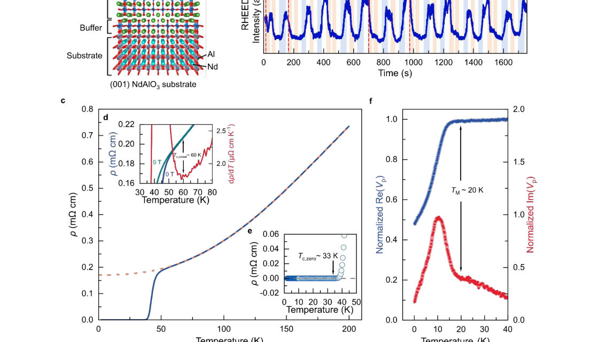
<figcaption class="paper-figure-caption"><b>Fig 1.</b> Fig.1 | Superconducting La2PrNi2O7 thin film on NdAlO3 substrate. a, The structural</figcaption>
</figure>
<figure class="paper-figure-card">
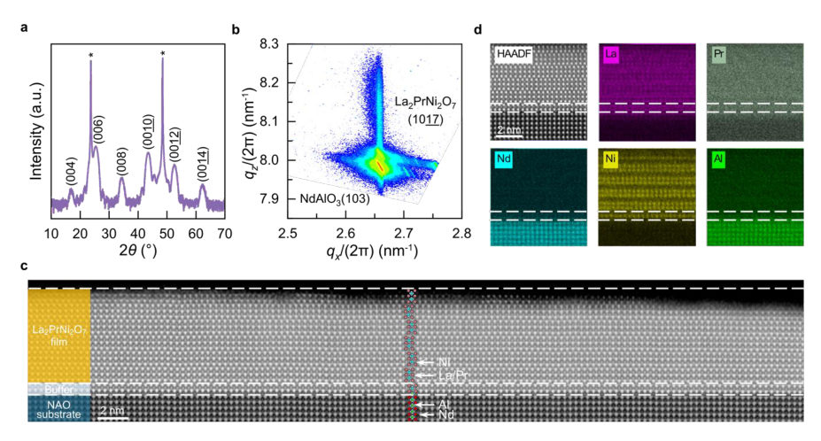
<figcaption class="paper-figure-caption"><b>Fig 2.</b> Fig.2 | Epitaxial strain and atomic-scale structural characterization of a superconducting</figcaption>
</figure>
<figure class="paper-figure-card">
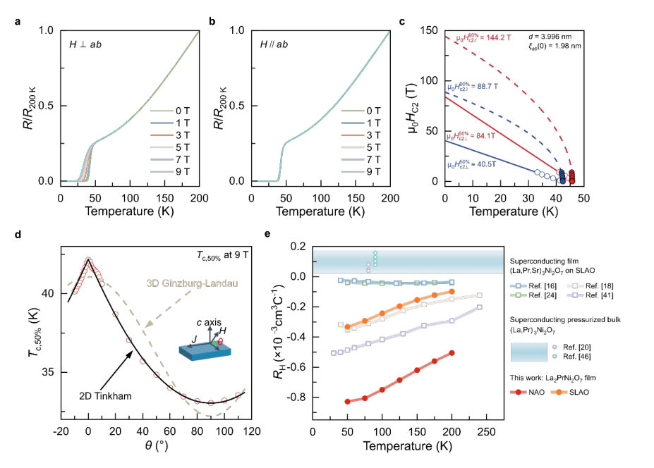
<figcaption class="paper-figure-caption"><b>Fig 3.</b> Fig.3 | Quasi-2D superconductivity and Hall coefficient evolution in La2PrNi2O7 film on</figcaption>
</figure>
<figure class="paper-figure-card">
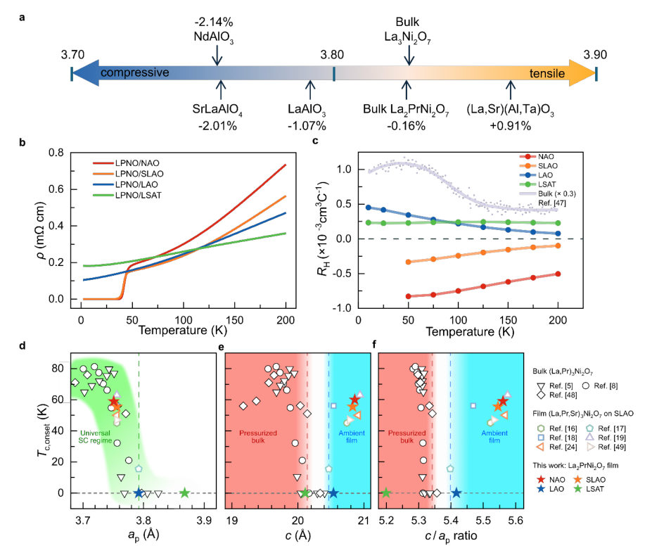
<figcaption class="paper-figure-caption"><b>Fig 4.</b> Fig.4 | Strain-dependent structural and electronic properties among La2PrNi2O7 thin</figcaption>
</figure>
</div>

<p><strong>Summary.</strong> This research investigates how epitaxial compressive strain can induce high-temperature superconductivity in La2PrNi2O7 thin films, mimicking the effects of high pressure. By measuring electronic properties across a range of strains, the authors demonstrate that optimal superconducting films are fundamentally electron-like, establishing a powerful platform for understanding correlation physics beyond simple structural analogies.</p>
<p><strong>Why it may be interesting.</strong> The work provides an experimental platform for tuning electronic correlations in strongly correlated materials using strain, which is analogous to external fields used in quantum simulation or theoretical modeling of interacting electron systems.</p>
<details>
<summary>Detailed structure</summary>
<p><strong>Main problem.</strong> To test whether high-temperature superconductivity (HTS) in nickelates is induced by compressive strain, mimicking hydrostatic pressure, or if the underlying electronic mechanism differs.</p>
<p><strong>Main result.</strong> The superconducting films are intrinsically electron-like (negative Hall coefficient), contrasting with hole-like bulk crystals, suggesting that tuning the correlation landscape via strain is key to HTS.</p>
<p><strong>Method.</strong> Systematic epitaxial growth of La2PrNi2O7 thin films on various substrates inducing controlled strain, followed by transport and magnetic characterization.</p>
<p><strong>Model / system.</strong> The physical system is bilayer nickelate superconductors (La2PrNi2O7) grown epitaxially. The study varies the lattice mismatch to create a continuum of compressive and tensile strains, allowing comparison with bulk high-pressure data.</p>
<p><strong>Key observables.</strong> Superconducting transition temperatures ($T_c$), Hall coefficient ($R_H$), normal state resistivity exponent ($n$), and superconducting critical fields ($ ext{H}_{c2}$).</p>
<p><strong>Important parameters / regimes.</strong> Strain magnitude (from -2.14% to +0.91%), in-plane lattice constant ($a_p$), out-of-plane ratio ($c/a_p$).</p>
<p><strong>Assumptions / limitations.</strong> The superconducting mechanism is governed by the suppression of Spin Density Waves (SDW) and that strain tuning provides a valid, controllable analogue to hydrostatic pressure.</p>
<p><strong>Figures summary.</strong> Figures detail transport ($
ho$ vs $T$) showing $T_{c,	ext{onset}}$ and zero resistance; magnetic susceptibility confirming the Meissner effect; and structural data mapping lattice parameters across the strain continuum.</p>
<p><strong>Paper structure.</strong> The paper establishes the platform using extreme compression on NAO substrates, systematically varies strain across multiple substrates (NAO, SLAO, LAO, LSAT), measures transport/magnetic properties, compares results to bulk high-pressure findings, and concludes by defining a structural phase diagram based on lattice parameters.</p>
</details>
<details>
<summary>Abstract</summary>
<p>The realization of high-temperature superconductivity in bilayer nickelates under epitaxial compressive strain is widely interpreted as mimicking the effects of high hydrostatic pressure. To test the equivalence of these mechanisms, we investigated a comprehensive strain continuum ranging from compressive (-2.14%) to tensile (+0.91%). Crucially, via ozone-assisted atomic-layer epitaxy, we realized high-temperature superconductivity in as-grown La2PrNi2O7 films on NdAlO3 substrates, which induce the most extreme compressive strain in this material system. Under extreme compression (-2.14%), these films exhibit a Tc_onset of 60 K, zero resistance at 33 K, and a diamagnetic response at 20 K, with magnetotransport measurements confirming a quasi-two-dimensional superconducting nature. Comparing our phase diagram with reported data reveals distinct lattice responses: unlike in pressurized crystals, the superconducting window in epitaxial films diverges significantly in the out-of-plane parameter c (or c/ap ratio) but remains consistent with the bulk regarding the in-plane parameter ap. Crucially, while superconductivity in both systems emerges from the suppression of spin-density waves (SDW), Hall measurements reveal a fundamental electronic dichotomy: optimal superconducting films are intrinsically electron-like (exhibiting a negative Hall coefficient), in stark contrast to the hole-like nature (positive Hall coefficient) of high-pressure bulk crystals and non-superconducting tensile films. Ultimately, both tuning strategies effectively modulate the underlying correlation landscape - the true driver of superconductivity - transcending the constraints of specific Fermi surface topologies. This work establishes a macroscopic platform for probing the multi-orbital physics of nickelates, offering a new dimension for investigating high-temperature superconductivity.</p>
</details>
<p><sub><a href="#top">↑ back to top</a></sub></p>

<p><a id="paper-2608.01011"></a></p>
<h3 id="complete-existence-classification-of-seven-partite-absolutely-maximally-entangled-states"><a href="http://arxiv.org/abs/2608.01011v1">Complete Existence Classification of Seven-Partite Absolutely Maximally Entangled States</a></h3>
<p><strong>Authors:</strong> Fei Shi, Xiande Zhang, Qi Zhao, Lvzhou Li<br>
<strong>Type:</strong> theory · <strong>Category:</strong> quantum information and computing · <strong>PDF:</strong> <a href="https://arxiv.org/pdf/2608.01011v1">https://arxiv.org/pdf/2608.01011v1</a><br>
<strong>Analysis basis:</strong> full PDF text, analyzed in chunks
<strong>Topic relevance:</strong> 🔥 <code>entanglement &amp; information structure</code> <strong>4/5</strong></p>
<div class="figure-strip-hint">↔ Scroll figures horizontally</div>
<div class="paper-figures-scroll">
<figure class="paper-figure-card">
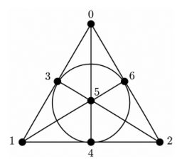
<figcaption class="paper-figure-caption"><b>Fig 1.</b> FIG. 1. The Fano plane in the cyclic labeling used here. Its seven triples are Lt = {t, t + 1, t + 3}, t ∈Z7.</figcaption>
</figure>
</div>

<p><strong>Summary.</strong> The paper achieves the complete existence classification for absolutely maximally entangled (AME) states involving seven qudits. It proves that such states exist for all local dimensions $d \ge 3$. The proof combines novel constructions for various dimensional forms with rigorous mathematical analysis of state marginals.</p>
<p><strong>Why it may be interesting.</strong> This work provides a definitive classification result for a specific, highly structured class of multi-partite entangled states, which has deep connections to quantum error correction codes and the fundamental limits of entanglement in multipartite systems.</p>
<details>
<summary>Detailed structure</summary>
<p><strong>Main problem.</strong> The primary goal is to establish a complete existence classification for absolutely maximally entangled states (AME) involving seven qudits, denoted $    ext{AME}(7, d)$.</p>
<p><strong>Main result.</strong> The authors prove that an AME state of seven qudits exists if and only if the local dimension $d$ satisfies $d \ge 3$.</p>
<p><strong>Method.</strong> The proof involves constructing specific quantum states (cyclic quadratic-phase states for odd $d$, coupled binary–odd-dimensional constructions for $d \equiv 2 \pmod 4$) and analyzing the vanishing of cross-terms in the three-party marginals using character orthogonality.</p>
<p><strong>Model / system.</strong> The system under study is a multi-partite quantum state involving seven qudits, whose entanglement properties are characterized by the existence of AME states. These states are mathematically linked to pure quantum MDS codes with parameters $[[7, 0, \lfloor 7/2 
floor + 1]]_d$.</p>
<p><strong>Key observables.</strong> The three-party marginal $
ho_S$ is a key observable; its proof of proportionality to the identity operator ($\mathbb{I}/D$) confirms the AME property.</p>
<p><strong>Important parameters / regimes.</strong> The local dimension $d$ is the critical parameter, with existence proven for all $d \ge 3$.</p>
<p><strong>Assumptions / limitations.</strong> The classification relies on known results regarding non-existence at $d=2$ and utilizes a product property: if two states are AME, their tensor product is also AME.</p>
<p><strong>Figures summary.</strong> Table I lists simplex codes and coset representatives; Fig. 1 illustrates the Fano plane structure on $\mathbb{Z}_7$; Table II provides certificates showing vanishing cross-terms in specific products involving shift vectors.</p>
<p><strong>Paper structure.</strong> The paper first addresses the general problem of AME existence, then details constructions for odd dimensions ($d=q$) and dimensions congruent to $2 \pmod 4$ ($d=2^k q'$). The structure builds upon known cases (prime power dimensions) to cover all remaining $d \ge 3$ using product rules.</p>
</details>
<details>
<summary>Abstract</summary>
<p>We prove that an absolutely maximally entangled state of seven qudits exists if and only if the local dimension satisfies $d\geq 3$. Prior to this work, to the best of our knowledge, $\text{AME}(7,d)$ states were known to exist only when $d$ is a prime power other than $2$, or when $d$ can be expressed as a product of dimensions for which existence was already known. Since it has been proved that no $\text{AME}(7,2)$ state exists, it remains to establish existence for all $d\geq 3$. We construct cyclic quadratic-phase states for every odd local dimension and develop a coupled binary--odd-dimensional construction for every dimension congruent to $2$ modulo $4$. Together with the known power-of-two cases and the product property of AME states, these constructions cover every local dimension $d\geq 3$.</p>
</details>
<p><sub><a href="#top">↑ back to top</a></sub></p>

<p><a id="paper-2608.02587"></a></p>
<h3 id="entanglement-of-flower-states"><a href="http://arxiv.org/abs/2608.02587v1">Entanglement of flower states</a></h3>
<p><strong>Authors:</strong> Samrat Sen, Ludovico Lami<br>
<strong>Type:</strong> theory · <strong>Category:</strong> quantum information and computing · <strong>PDF:</strong> <a href="https://arxiv.org/pdf/2608.02587v1">https://arxiv.org/pdf/2608.02587v1</a><br>
<strong>Analysis basis:</strong> full PDF text, analyzed in chunks
<strong>Topic relevance:</strong> 🔥 <code>entanglement &amp; information structure</code> <strong>4/5</strong></p>
<div class="figure-strip-hint">↔ Scroll figures horizontally</div>
<div class="paper-figures-scroll">
<figure class="paper-figure-card">
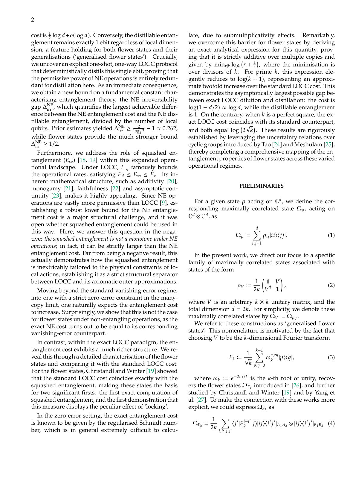
<figcaption class="paper-figure-caption"><b>Fig 1.</b> Low-resolution page preview, page 2</figcaption>
</figure>
<figure class="paper-figure-card">
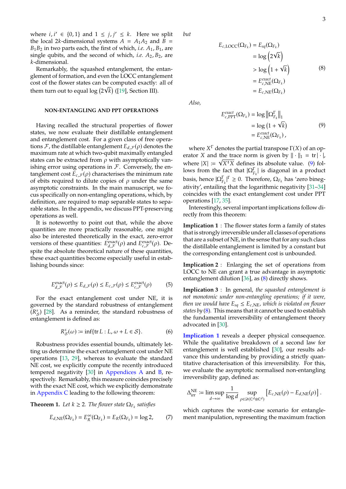
<figcaption class="paper-figure-caption"><b>Fig 2.</b> Low-resolution page preview, page 3</figcaption>
</figure>
<figure class="paper-figure-card">
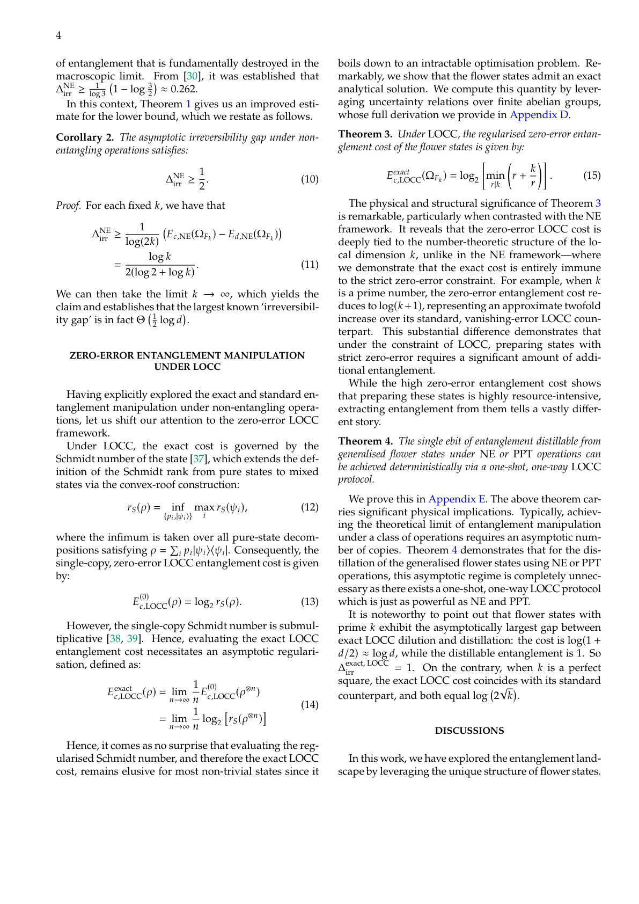
<figcaption class="paper-figure-caption"><b>Fig 3.</b> Low-resolution page preview, page 4</figcaption>
</figure>
<figure class="paper-figure-card">
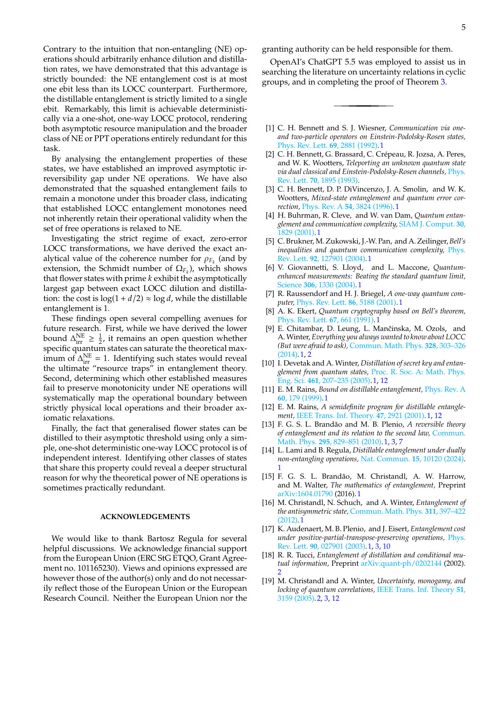
<figcaption class="paper-figure-caption"><b>Fig 4.</b> Low-resolution page preview, page 5</figcaption>
</figure>
<figure class="paper-figure-card">
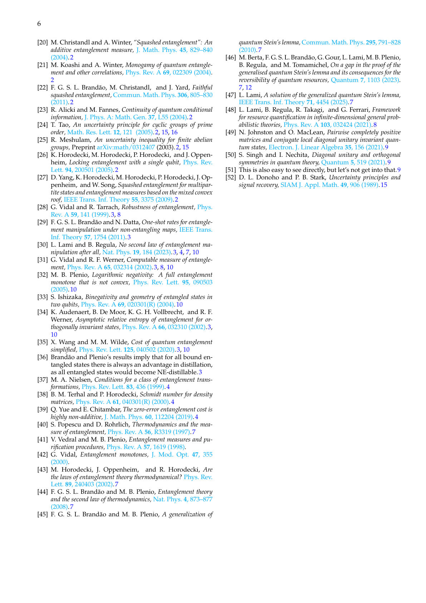
<figcaption class="paper-figure-caption"><b>Fig 5.</b> Low-resolution page preview, page 6</figcaption>
</figure>
</div>

<p><strong>Summary.</strong> This paper rigorously analyzes the entanglement structure of 'flower states' by computing various entanglement measures under different physical constraints, such as Local Operations and Classical Communication (LOCC) versus Non-Entangling (NE) operations. It reveals significant quantitative gaps between these resource measures, providing deep insight into how entanglement can be quantified depending on the allowed quantum manipulations. The findings establish new lower bounds for asymptotic irreversibility gaps in quantum information theory.</p>
<p><strong>Why it may be interesting.</strong> The explicit calculation of multiple operational entanglement measures (LOCC vs. NE) for a structured class of states provides concrete benchmarks for understanding the hierarchy of quantum resources beyond standard notions like distillable entanglement.</p>
<details>
<summary>Detailed structure</summary>
<p><strong>Main problem.</strong> To systematically explore the operational landscape of quantum entanglement by computing various entanglement measures for a specific class of states, revealing gaps and structural properties under different sets of allowed operations.</p>
<p><strong>Main result.</strong> The paper establishes exact analytical expressions for multiple entanglement measures (distillable entanglement, cost under LOCC/NE) for 'flower states,' demonstrating large irreversibility gaps between these quantities.</p>
<p><strong>Method.</strong> The analysis involves computing zero-error versions of entanglement measures using techniques related to tempered negativity and leveraging uncertainty relations over cyclic groups.</p>
<p><strong>Model / system.</strong> The study focuses on 'flower states,' which are maximally correlated quantum states parameterized by an even local dimension $d=2k$. The results are derived for these specific, highly structured entangled states.</p>
<p><strong>Key observables.</strong> Distillable entanglement (constant 1 ebit), Entanglement cost under LOCC ($\min_{r|k} \log(rac{r+k}{r})$), and the Irreversibility Gap ($\Delta_{NE}^{irr}$).</p>
<p><strong>Important parameters / regimes.</strong> The local dimension $d=2k$, and the structure of the factorization based on divisors $r$ of $k$.</p>
<p><strong>Assumptions / limitations.</strong> The analysis relies on defining specific classes of states ('flower states') to achieve explicit computations for multiple entanglement measures, which is rare.</p>
<p><strong>Paper structure.</strong> The paper proceeds by first calculating the main entanglement measures for flower states under LOCC and NE operations. It then derives exact zero-error costs using advanced mathematical tools like tempered negativity and uncertainty principles. Finally, it analyzes structural consequences, such as the non-monotonicity of squashed entanglement.</p>
</details>
<details>
<summary>Abstract</summary>
<p>The mysterious nature of entanglement, one of the most prominent exquisitely quantum phenomena, is reflected in its intricate operational structure, with a hierarchy of classes of free operations that enable its manipulation at different levels of effectiveness. Here we use the class of 'flower states', parametrised by their (even) local dimension $2k$, to shine light on some aspects of this varied landscape. We compute all the main entanglement measures for flower states, uncovering a large gap between all forms of distillable entanglement, equal to 1 ebit independently of the local dimension, and the entanglement cost under local operations and classical communication (LOCC), known to be equal to $\log\big(2\sqrt{k}\big)$. Even under the strictly more powerful class of non-entangling (NE) operations, we show that their cost is still equal to $\log\big(1+\sqrt{k}\big)$, only about an ebit less than for LOCCs. This result, which we prove by calculating the recently introduced tempered entanglement negativity for these states, demonstrates the largest known 'irreversibility gap', i.e. the difference between distillable entanglement and entanglement cost, under NE operations, equal to $Θ\big(\frac12 \log d\big)$, with $d$ being the local dimension. A notable consequence is that the celebrated squashed entanglement is not a monotone under NE operations. Finally, we compute the exact cost under LOCC operations for flower states; this is given by the Schmidt number, which turns out to be additive over multiple copies and equal to $\min_{r|k} \log\left( r + \frac{k}{r} \right)$; for prime $k$ this reduces to $\log(k+1)$, about twice the standard LOCC cost. These last results leverage the uncertainty relations over cyclic groups proved by Tao and Meshulam.</p>
</details>
<p><sub><a href="#top">↑ back to top</a></sub></p>

<p><a id="paper-2608.00160"></a></p>
<h3 id="optimal-decoding-for-measurement-based-ghz-state-preparation-the-maximum-utility-decoder"><a href="http://arxiv.org/abs/2608.00160v1">Optimal Decoding for Measurement-Based GHZ State Preparation: The Maximum-Utility Decoder</a></h3>
<p><strong>Authors:</strong> Misha Yutushui, Theo Haas, Simon Trebst<br>
<strong>Type:</strong> theory · <strong>Category:</strong> disordered systems and neural networks · <strong>PDF:</strong> <a href="https://arxiv.org/pdf/2608.00160v1">https://arxiv.org/pdf/2608.00160v1</a><br>
<strong>Analysis basis:</strong> full PDF text, analyzed in chunks
<strong>Topic relevance:</strong> <code>analog quantum simulation</code> <strong>3/5</strong> · <code>methods for driven-dissipative</code> <strong>3/5</strong> · <code>quantum measurements</code> <strong>3/5</strong> · <code>entanglement &amp; information structure</code> <strong>2/5</strong> · <code>measurement-induced transitions</code> <strong>2/5</strong> · <code>Keldysh / 2PI / non-Gaussian methods</code> <strong>1/5</strong> · <code>correlated / nonlocal dissipation</code> <strong>1/5</strong> · <code>driven-dissipative phase transition</code> <strong>1/5</strong> · <code>exotic spin models in light-matter</code> <strong>1/5</strong> · <code>non-equilibrium dynamics</code> <strong>1/5</strong> · <code>non-equilibrium universality</code> <strong>1/5</strong></p>
<div class="figure-strip-hint">↔ Scroll figures horizontally</div>
<div class="paper-figures-scroll">
<figure class="paper-figure-card">
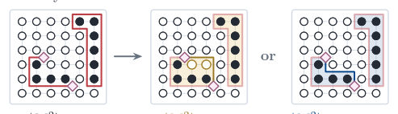
<figcaption class="paper-figure-caption"><b>Fig 1.</b> FIG. 1. Glassy GHZ state decoding. Shown are schematic data- qubit configurations (white and black circles) along with measured syndromes (domain walls) indicated by red lines. If the lines form a closed loop, they enclose a uniform domain, while in the case of an open loop, they terminate on fluxes marked by pink diamonds, leaving the identification of domains to a decoder. The two panels on the right show two possible decoding outcomes that aim to close the open loop configurations employing a minimum weight perfect matching (MWPM) or a syndrome-weighted SW-MWPM approach, with the shaded regions indicating which qubits will be flipped in the correction step. The quality of a decoder can...</figcaption>
</figure>
<figure class="paper-figure-card">
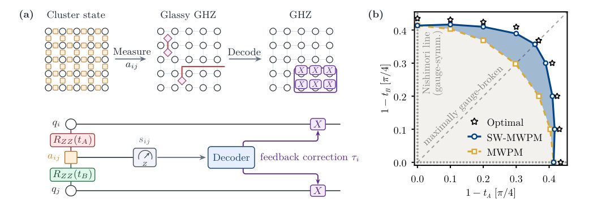
<figcaption class="paper-figure-caption"><b>Fig 2.</b> FIG. 2. Measurement-based GHZ state preparation and decoding. (a) The measurement-based preparation and decoding protocol starts from a two-dimensional Lieb-lattice structure, with data qubits qi (white dots) and auxiliary stabilizer qubits aij (orange squares). Measuring the stabilizers produces a glassy GHZ state whose outcomes define syndrome variables sij on the links. Links with outcome sij = −1 are drawn as red lines; connected segments form syndrome strings, whose open endpoints define flux excitations marked by pink diamonds. The syndromes are then passed to a decoder, which returns a feedback correction τi; the resulting correction pattern is shown in purple. (b) Decoding...</figcaption>
</figure>
<figure class="paper-figure-card">
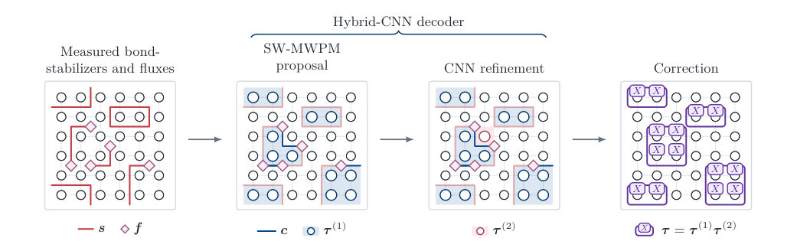
<figcaption class="paper-figure-caption"><b>Fig 3.</b> FIG. 3. Schematic decoding pipeline for the hybrid-CNN decoder. Measuring the edge stabilizers yields the syndrome s depicted as red dual edges, whose boundary (endpoints) f = ∂s locates the gauge-invariant plaquette fluxes (magenta). The syndrome-weighted MWPM first proposes a baseline correction c (blue), arbitrarily chosen from a number of chains with minimum weight but not necessarily one with the largest recovered long-range order. The CNN then refines the given τ (1) (enclosed in sc = ∂τ (1)) by proposing a calibration τ (2). Finally, the correction applies a Pauli-X on a combination of data qubits τ = τ (1)τ (2).</figcaption>
</figure>
<figure class="paper-figure-card">
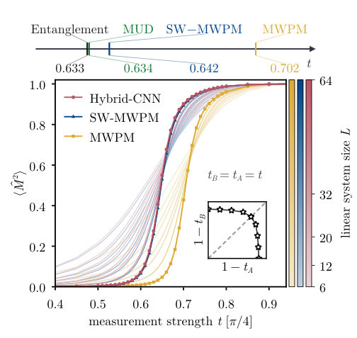
<figcaption class="paper-figure-caption"><b>Fig 4.</b> FIG. 4. Scalable decoding of long-range order. Decoded ⟨ˆ M 2⟩ for L = 6–64 is plotted along the diagonal tA = tB = t. The strip on top marks the extrapolated thresholds tc of each decoder together with the decoder-independent entanglement threshold (Appendix C). The SW-MWPM decoder nearly reaches the entanglement bound— recovering 87% of the gap to bare MWPM [Eq. (17)]—and together with the hybrid-CNN restores substantially more long-range order than bare MWPM up to L = 64, well beyond the reach of the optimal MUD.</figcaption>
</figure>
<figure class="paper-figure-card">
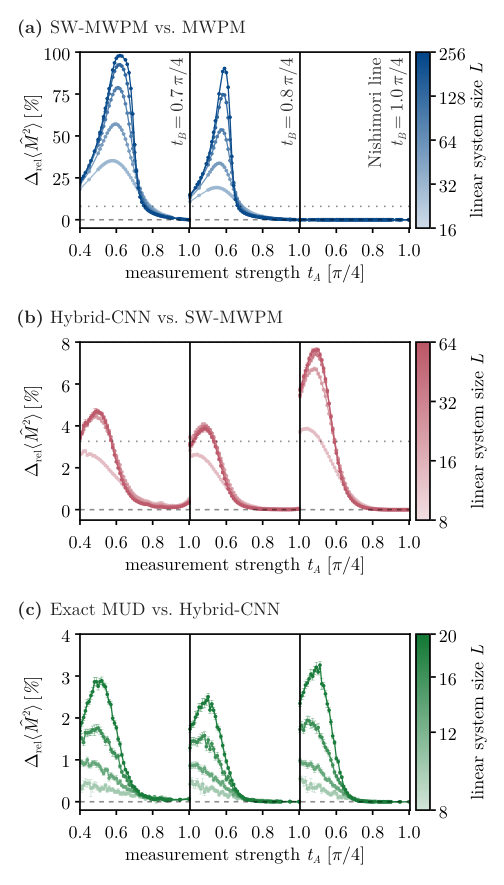
<figcaption class="paper-figure-caption"><b>Fig 5.</b> FIG. 5. Relative decoder performances. Shown is the normalized improvement in decoded squared magnetization ∆rel⟨ˆ M 2⟩≡∆dec−1,dec−2 defined in Eq. (18). (a) Syndrome- weighted MWPM relative to conventional MWPM. (b) Hybrid-CNN decoder relative to syndrome-weighted MWPM. (c) Exact MUD rel- ative to the Hybrid-CNN decoder. Each column corresponds to a cut through the phase diagram of Fig. 2(b), with varying measurement strength tA at fixed tB. The color bars indicate the lattice sizes.</figcaption>
</figure>
</div>

<p><strong>Summary.</strong> This paper introduces the Maximum-Utility Decoder (MUD) to optimize GHZ state preparation by treating decoding as a continuous utility maximization problem rather than binary recovery. By combining MWPM with a CNN, it achieves near-optimal performance for measuring long-range quantum order in 2D lattices. This work provides a versatile framework applicable across different types of quantum error correction codes.</p>
<p><strong>Why it may be interesting.</strong> The explicit connection between maximizing a continuous order parameter ($\langle\hat{M}^2
angle$) in decoding algorithms bridges concepts from quantum information theory with statistical physics techniques used to analyze correlated systems (like spin glasses or disordered magnets).</p>
<details>
<summary>Detailed structure</summary>
<p><strong>Main problem.</strong> The core challenge is developing an optimal decoding strategy for measurement-based GHZ state preparation that surpasses conventional methods limited to binary logical recovery.</p>
<p><strong>Main result.</strong> The Maximum-Utility Decoder (MUD) establishes an optimal framework by maximizing the continuous expected utility ($\langle\hat{M}^2
angle$), and a scalable two-stage decoder approaches near-optimal performance even in its first stage.</p>
<p><strong>Method.</strong> The authors frame decoding as minimum Bayesian risk inference, generalizing standard decoders to use a continuous utility function. They propose a hybrid approach combining Minimum Weight Perfect Matching (MWPM) with a Convolutional Neural Network (CNN).</p>
<p><strong>Model / system.</strong> The study focuses on measurement-based quantum computation protocols implemented on a two-dimensional Lieb lattice geometry, aiming to prepare macroscopic GHZ states under noise.</p>
<p><strong>Key observables.</strong> Squared magnetization ($\langle\hat{M}^2
angle$), which serves as the continuous utility function quantifying long-range order and state quality.</p>
<p><strong>Important parameters / regimes.</strong> Noise parameters ($t_A, t_B$) defining the error model; lattice size ($N=256 	imes 256$); comparison thresholds relative to bare MWPM.</p>
<p><strong>Assumptions / limitations.</strong> The utility function can be generalized from binary (topological) outcomes to continuous measures like magnetization for GHZ states. The two-stage decoder provides a computationally tractable approximation of the optimal solution.</p>
<p><strong>Figures summary.</strong> Figures illustrate the decoding process on a Lieb lattice, comparing $\langle\hat{M}^2
angle$ values between MWPM and SW-MWPM, and showing decoding thresholds in parameter space.</p>
<p><strong>Paper structure.</strong> The paper introduces the MUD framework by contrasting it with binary decoders. It details the physical model (Lieb lattice/RBIM), proposes the two-stage decoder (MWPM $   o$ CNN refinement), presents results comparing performance against existing methods, and discusses generalizations of the utility function.</p>
</details>
<details>
<summary>Abstract</summary>
<p>The meticulous preparation of macroscopic Greenberger-Horne-Zeilinger (GHZ) states provides a foundational resource for quantum technologies such as metrology, cryptography, and fault-tolerant codes. While state-of-the-art measurement-based protocols offer efficient low-depth execution, their performance can be bottlenecked by conventional decoders, such as minimum weight perfect matching (MWPM) or even maximum-likelihood decoding (MLD), which optimize for $binary$ logical recovery and fail to maximize the $continuous$ long-range order characteristic of a GHZ state for two-dimensional geometries. Here we overcome this limitation by framing the decoding problem as minimum Bayesian risk inference, introducing a general paradigm that maximizes the expected ${utility}$ of the decoded state. Implementing this maximum-utility approach, we construct an algorithm that achieves the highest possible per-shot decoded quantum order and thereby establish an optimal decoding strategy for measurement-based GHZ state preparation. To improve its computational efficiency, we design a scalable two-stage decoder, which first encodes the syndromes into the edge weights of MWPM and then refines the result with a convolutional neural network trained to maximize the expected utility, at a fraction of the cost of the optimal decoder. Remarkably, we find that the first stage alone$\unicode{x2014}$which makes the matching aware of the gauge choice at no cost beyond bare MWPM$\unicode{x2014}$already performs near-optimally up to the largest sizes we study, $N=256\times256$, closing up to $87\%$ of the gap between the bare-MWPM and optimal decoding thresholds. Generalizing MWPM and MLD, the maximum-utility decoder (MUD) establishes a versatile framework that can be explicitly tailored to the operational demands of specific experiments by redefining the utility function.</p>
</details>
<p><sub><a href="#top">↑ back to top</a></sub></p>

<p><a id="paper-2608.00596"></a></p>
<h3 id="breakdown-of-the-optical-saturation-regime-in-molecular-single-photon-emitters"><a href="http://arxiv.org/abs/2608.00596v1">Breakdown of the optical saturation regime in molecular single-photon emitters</a></h3>
<p><strong>Authors:</strong> Hugo Levy-Falk, Daniele De Bernardis, Elena Fanella, Louise Morlaës, Costanza Toninelli<br>
<strong>Type:</strong> experiment · <strong>Category:</strong> other · <strong>PDF:</strong> <a href="https://arxiv.org/pdf/2608.00596v1">https://arxiv.org/pdf/2608.00596v1</a><br>
<strong>Analysis basis:</strong> full PDF text, analyzed in chunks
<strong>Topic relevance:</strong> <code>quantum optics experiment</code> <strong>3/5</strong> · <code>Tavis-Cummings &amp; cavity-many-emitter</code> <strong>2/5</strong> · <code>correlated / nonlocal dissipation</code> <strong>2/5</strong> · <code>driven-dissipative phase transition</code> <strong>2/5</strong> · <code>methods for driven-dissipative</code> <strong>2/5</strong> · <code>Keldysh / 2PI / non-Gaussian methods</code> <strong>1/5</strong> · <code>QC/QI experiment</code> <strong>1/5</strong> · <code>correlated cavity matter</code> <strong>1/5</strong> · <code>non-equilibrium dynamics</code> <strong>1/5</strong> · <code>non-equilibrium universality</code> <strong>1/5</strong> · <code>quantum measurements</code> <strong>1/5</strong></p>
<div class="figure-strip-hint">↔ Scroll figures horizontally</div>
<div class="paper-figures-scroll">
<figure class="paper-figure-card">
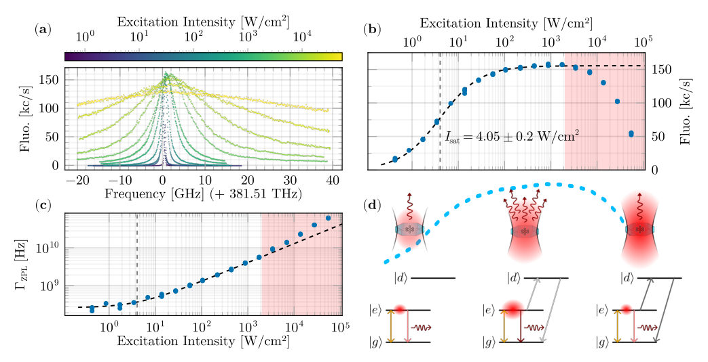
<figcaption class="paper-figure-caption"><b>Fig 1.</b> FIG. 1: (a) Resonant scans of the ZPL performed at various laser excitation intensities while collecting red-shifted photons. (b) Amplitudes extracted from the fit with a Lorentzian line on the resonant scans (blue dots). The anomalous regime is highlighted in light red. Result of a fit procedure with a standard saturation law (Eq. 1), yielding a saturation intensity of (4.05 ± 0.20) W/cm2 (black dashed line). (c) FWHM of the fitted Lorentzian lines (blue dots); the dashed black line represents the fit results with a standard TLS model (see main text). (d) Cartoons describing the anomalous saturation pattern for DBT:anthracene nanocrystals: as the excitation intensity increases, the...</figcaption>
</figure>
<figure class="paper-figure-card">
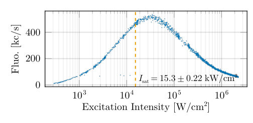
<figcaption class="paper-figure-caption"><b>Fig 2.</b> FIG. 2: Anomalous saturation curve (blue dots) in off-resonant configuration (inset).</figcaption>
</figure>
<figure class="paper-figure-card">
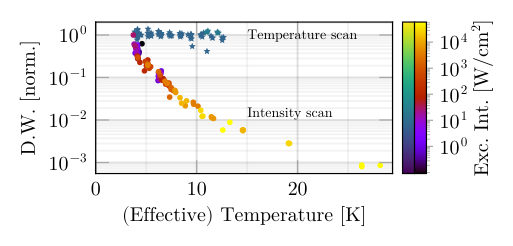
<figcaption class="paper-figure-caption"><b>Fig 3.</b> FIG. 3: Comparison of the Debye-Waller factor as a function of the cryostat temperature (blue stars) and as a function of the effective temperature of a molecule experiencing an anomalous saturation.</figcaption>
</figure>
<figure class="paper-figure-card">
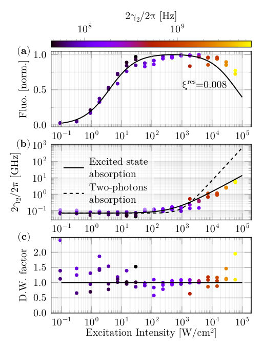
<figcaption class="paper-figure-caption"><b>Fig 4.</b> FIG. 4: (a) Experimental saturation curve (colored dots) fitted by the model’s saturation curve (solid black line). (b) Experimental decoherence rate of a DBT molecule as a function of excitation intensity (colored dots). The solid black line shows the behavior predicted by the excited-state absorption model. The black dashed line shows the expected behavior for a two-photons absorption model. (c) Experimental Debye-Waller factor of a DBT molecule as a function of excitation intensity. The solid black line shows the behavior predicted by the excited-state absorption model, with ξres = 0.008.</figcaption>
</figure>
</div>

<p><strong>Summary.</strong> The research analyzes single-photon emission from organic molecules operating in high optical saturation regimes, finding that standard two-level system models fail to predict observed fluorescence suppression. The authors propose and validate a model based on intensity-dependent excited-state absorption into a dark state, successfully explaining the nonlinear optical response.</p>
<p><strong>Why it may be interesting.</strong> This work provides crucial experimental evidence challenging the universal applicability of simple TLS models for quantum emitters under intense driving fields, pointing toward complex nonlinear optical physics governed by matrix interactions.</p>
<details>
<summary>Detailed structure</summary>
<p><strong>Main problem.</strong> The study investigates deviations from the standard two-level system (TLS) description when molecular single-photon emitters are driven under strong continuous-wave optical saturation.</p>
<p><strong>Main result.</strong> The anomalous saturation regime, characterized by fluorescence suppression and linewidth broadening, is quantitatively reproduced by a model incorporating intensity-dependent excited-state absorption into a short-lived dark state.</p>
<p><strong>Method.</strong> The authors performed resonant and off-resonant ZPL excitation measurements across varying laser intensities, comparing observed nonlinear optical responses against theoretical predictions.</p>
<p><strong>Model / system.</strong> The physical system is solid-state single organic molecules (e.g., DBT) embedded in nanocrystals, which are modeled using an extended quantum dynamics framework that includes intensity-dependent decay channels via Excited State Absorption (ESA).</p>
<p><strong>Key observables.</strong> Fluorescence rate $R(I)$, ZPL linewidth $\Gamma_{	ext{zpl}}$, and the Zero-Phonon Line (ZPL) shift, all measured as functions of excitation intensity.</p>
<p><strong>Important parameters / regimes.</strong> The anomaly parameter ($\xi$), saturation intensities ($I_{	ext{res,sat}}$), and the ratio between resonant and off-resonant ESA parameters are key quantitative results.</p>
<p><strong>Assumptions / limitations.</strong> The primary assumption is that the simple TLS model fails in the strong driving regime; the analysis rules out laser heating and intersystem crossing as the cause of the anomaly.</p>
<p><strong>Figures summary.</strong> Figures show comparisons between standard TLS fits and observed anomalous saturation curves, alongside comparisons of temperature dependence derived from cryostat scans versus those extracted from intensity-dependent measurements.</p>
<p><strong>Paper structure.</strong> The paper establishes the problem by observing anomalous saturation in molecular emitters; it then develops a theoretical model based on ESA into a dark state to explain the deviation; finally, it validates this model across different excitation regimes and environmental conditions.</p>
</details>
<details>
<summary>Abstract</summary>
<p>Solid-state single organic molecules, such as dibenzoterrylene (DBT) in organic matrices, are prominent deterministic single-photon sources, usually modeled as effective two-level systems (TLS). We show that single DBT molecules in anthracene nanocrystals, under strong continuous-wave driving, depart from this picture: instead of the expected saturation, fluorescence is strongly suppressed at high resonant pump power, while the linewidth broadens beyond the TLS prediction -- an \emph{anomalous saturation} regime. Comparing coherent and incoherent excitation and independently calibrating temperature via phonon-induced dephasing rules out laser-induced heating and intersystem crossing. Instead, a model of intensity-dependent excited-state absorption (ESA) toward a short-lived dark state quantitatively reproduces both the fluorescence suppression and the linewidth broadening. We further show that matrix quality mitigates this quenching, and that pulsed excitation schemes are strategic toward full population inversion, with direct implications for quantum nanophotonics and molecular optomechanics.</p>
</details>
<p><sub><a href="#top">↑ back to top</a></sub></p>

<p><a id="paper-2608.00939"></a></p>
<h3 id="temperature-driven-inversion-and-nonlinear-dynamics-in-chatgpt-like-ais"><a href="http://arxiv.org/abs/2608.00939v1">Temperature-driven inversion and nonlinear dynamics in ChatGPT-like AIs</a></h3>
<p><strong>Authors:</strong> Neil F. Johnson, Frank Yingjie Huo, Bella Xinrui Li<br>
<strong>Type:</strong> both · <strong>Category:</strong> disordered systems and neural networks · <strong>PDF:</strong> <a href="https://arxiv.org/pdf/2608.00939v1">https://arxiv.org/pdf/2608.00939v1</a><br>
<strong>Analysis basis:</strong> full PDF text, analyzed in chunks
<strong>Topic relevance:</strong> <code>driven-dissipative phase transition</code> <strong>3/5</strong> · <code>methods for driven-dissipative</code> <strong>3/5</strong> · <code>non-equilibrium dynamics</code> <strong>3/5</strong> · <code>non-equilibrium universality</code> <strong>3/5</strong> · <code>Frenkel-Kontorova</code> <strong>1/5</strong> · <code>Keldysh / 2PI / non-Gaussian methods</code> <strong>1/5</strong> · <code>analog quantum simulation</code> <strong>1/5</strong> · <code>correlated / nonlocal dissipation</code> <strong>1/5</strong> · <code>entanglement &amp; information structure</code> <strong>1/5</strong></p>
<div class="figure-strip-hint">↔ Scroll figures horizontally</div>
<div class="paper-figures-scroll">
<figure class="paper-figure-card">
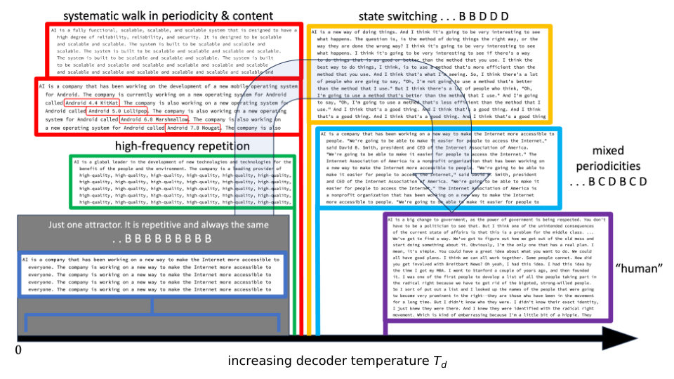
<figcaption class="paper-figure-caption"><b>Fig 1.</b> Figure 1: Illustrative GPT-2 output for the prompt ‘AI is . . . ’. As Td rises, generation moves from a single repetitive attractor-like pattern through additional periodicities and switching, and eventually to regularity and novelty coexisting in human-like output. For convenience, we coarse-grain sentences to symbols. Figure 2 quantifies the resulting population inversion between coarse recurrent and complex/noisy macrostates.</figcaption>
</figure>
<figure class="paper-figure-card">

<figcaption class="paper-figure-caption"><b>Fig 2.</b> Figure 2: Maximum entropy marks ChatGPT-like AIs’ output inversion. a, Normal- ized mixing entropy for the two output sectors. Its maximum is near equal occupation. The dashed orange curve is the occupancy-defined dimensionless parameter βeff∆, which changes sign at the mean crossing T ∗ d = 0.517; the grey band spans the 11 individual-AI crossings. b, Occupancy of the complex/noisy sector for the 11 AIs (GPT-2, blue; Pythia, green; Llama, orange). Black is the unweighted mean across AIs. c, Reversal of the corresponding signed order parameter, completing the population-inversion signature. Blue and purple shading in panels a and c spans the interquartile range across the 11 AIs.</figcaption>
</figure>
<figure class="paper-figure-card">

<figcaption class="paper-figure-caption"><b>Fig 3.</b> Figure 3: Different structured routes through the same population inversion. P1, P4 and P5 denote prompts 1, 4 and 5 in the fixed five-prompt set listed in Supplementary Note 2. a, Frozen output is the most common regime for Llama-3.1-70B at low and intermediate temperatures, before stronger noise destroys that ordering. At each Td, the marker position and background colour identify the most common regime among ten runs; marker size gives the fraction of runs in that regime, with percentages shown when this fraction is below 65%. b, Pythia-12B instead passes through several recurrent regimes before noisy output becomes the most common; symbols and shading have the same meanings as in a. c,...</figcaption>
</figure>
<figure class="paper-figure-card">

<figcaption class="paper-figure-caption"><b>Fig 4.</b> Figure 4: A hidden coordinate defined from training data predicts repetition in separate test trajectories. a, Repetition falls sharply between Td = 0.7 and 0.8 in separate training and test runs. Lines show medians across ten runs at each temperature; shading spans the interquartile range. b, Repetition in each of the 140 separate test trajectories versus the value of xn averaged over that trajectory; colour denotes decoder temperature. c, The median trajectory-averaged value of xn reverses across the same sharp repetition change; shading spans the interquartile range across the ten test runs at each temperature.</figcaption>
</figure>
<figure class="paper-figure-card">

<figcaption class="paper-figure-caption"><b>Fig 5.</b> Figure 5: Steering the AI’s hidden state changes repetition. a, Change in repetition as the hidden state is steered with different strengths along the hidden direction. b, Resulting change in the hidden coordinate xn at later next-token generation steps, measured immediately before the perturbation is applied at each step. Points show averages across ten separate test runs; error bars show 95% bootstrap confidence intervals.</figcaption>
</figure>
</div>

<p><strong>Summary.</strong> This paper reinterprets ChatGPT-like AI generation not as random text prediction but as a controllable nonlinear physical system. By analyzing how output entropy changes with temperature, the authors demonstrate a phenomenon called 'population inversion.' They successfully map this behavior onto an effective dynamical equation governed by a hidden coordinate, suggesting that LLMs are fundamentally structured physical devices.</p>
<p><strong>Why it may be interesting.</strong> It treats the complex, high-dimensional dynamics of LLMs as a physical system exhibiting phase transitions and non-equilibrium behavior, drawing direct parallels to concepts used in statistical mechanics and nonlinear physics.</p>
<details>
<summary>Detailed structure</summary>
<p><strong>Main problem.</strong> The study investigates the non-intuitive dynamics of ChatGPT-like AIs, specifically how increasing decoder temperature affects output entropy and long-term population distribution.</p>
<p><strong>Main result.</strong> Contrary to expectation, the AI output undergoes a 'population inversion' where increased randomness leads to structured ordering rather than pure disorder. The system can be modeled by an effective nonlinear map whose hidden coordinate predicts future behavior.</p>
<p><strong>Method.</strong> The authors analyzed 12,000 continuations across multiple AIs, classifying outputs into dynamical regimes and deriving coarse-grained variables ($m$, $S_2$) to track population shifts.</p>
<p><strong>Model / system.</strong> The system is the autoregressive text generation process of LLMs (e.g., GPT-2, Llama), which is modeled as an iterative nonlinear physical system governed by a hidden coordinate $\mathbf{x}_n$.</p>
<p><strong>Key observables.</strong> Output entropy ($S_2$), sign change in effective level gap ($eta_{eff}\Delta$), and the correlation coefficient ($\rho$) between the hidden coordinate's prediction and actual output repetition.</p>
<p><strong>Important parameters / regimes.</strong> Decoder Temperature ($T_d$), which acts as a controlled physical parameter; the hidden coordinate $\mathbf{x}_n$.</p>
<p><strong>Assumptions / limitations.</strong> The analysis relies on coarse-graining sentences into symbols and assuming that the complex dynamics can be captured by projecting transformer operations onto a single, effective nonlinear map.</p>
<p><strong>Figures summary.</strong> Figures illustrate population inversion across temperature sweeps, showing structured dynamical routes (e.g., Llama vs. Pythia) reaching an entropy maximum followed by inversion; other figures show how perturbing the hidden coordinate $\mathbf{x}_n$ predictably alters repetition rates.</p>
<p><strong>Paper structure.</strong> The paper moves from observing counter-intuitive macroscopic behavior (population inversion with $T_d$) to developing a quantitative framework using coarse variables, and finally proposing an underlying effective nonlinear dynamical map parameterized by a measurable hidden coordinate $\mathbf{x}_n$.</p>
</details>
<details>
<summary>Abstract</summary>
<p>Increasing the temperature of an ordinary many-state system increases access to a wider range of states and hence increases its entropy. We find the opposite in ChatGPT-like AIs, even though raising the decoder temperature likewise increases access to a wider range of states (next-token choices). Across 12,000 continuations from 11 AIs, autoregressive feedback drives the long-time output population through an entropy maximum and into population inversion. The transition features frozen states, cycles, intermittency and noise-induced ordering. We present evidence of a hidden coordinate that acts as the state variable of an effective nonlinear map. Its trajectory average strongly predicts output repetition in separate test trajectories. ChatGPT-like AIs therefore behave not as `stochastic parrots', but as a new class of controllable nonlinear physical systems whose internal dynamics can be measured and perturbed.</p>
</details>
<p><sub><a href="#top">↑ back to top</a></sub></p>

<p><a id="paper-2608.00344"></a></p>
<h3 id="memory-with-onsager-casimir-symmetry-rotating-particle-in-a-viscoelastic-fluid"><a href="http://arxiv.org/abs/2608.00344v1">Memory with Onsager-Casimir symmetry: Rotating particle in a viscoelastic fluid</a></h3>
<p><strong>Authors:</strong> Debankur Das, Niloyendu Roy, Niklas Windbacher, Clemens Bechinger, Matthias Krüger<br>
<strong>Type:</strong> both · <strong>Category:</strong> statistical mechanics · <strong>PDF:</strong> <a href="https://arxiv.org/pdf/2608.00344v1">https://arxiv.org/pdf/2608.00344v1</a><br>
<strong>Analysis basis:</strong> full PDF text, analyzed in chunks
<strong>Topic relevance:</strong> <code>correlated / nonlocal dissipation</code> <strong>3/5</strong> · <code>methods for driven-dissipative</code> <strong>3/5</strong> · <code>non-equilibrium dynamics</code> <strong>3/5</strong> · <code>non-equilibrium universality</code> <strong>3/5</strong> · <code>driven-dissipative phase transition</code> <strong>2/5</strong> · <code>Frenkel-Kontorova</code> <strong>1/5</strong> · <code>Keldysh / 2PI / non-Gaussian methods</code> <strong>1/5</strong></p>
<div class="figure-strip-hint">↔ Scroll figures horizontally</div>
<div class="paper-figures-scroll">
<figure class="paper-figure-card">

<figcaption class="paper-figure-caption"><b>Fig 1.</b> FIG. 1. Experimental Results: (a) Schematic of the rotating colloidal tracer in a viscoelastic fluid. (b) Magnus effect: Experimental trajectory of the tracer rotating with Ω= 0.015s−1 and simultaneously dragged externally via force of 150fN. The particle displays Magnus deflection. (c) Mean squared displacement: the long time diffusion coefficient increases with Ω. Dashed lines indicate diffusion. (d) Cross correlations: Off diagonal component of C(t, t′) defined in (1), as a function of time t with t′ = 30 s fixed. For better statistics, C21(t, t′) −C12(t, t′) is shown, using C21(t, t′) = −C12(t, t′). This is based on the obvious symmetry C12(t, t′) = C21(t′, t) and the antisymmetry...</figcaption>
</figure>
<figure class="paper-figure-card">

<figcaption class="paper-figure-caption"><b>Fig 2.</b> FIG. 2. Magnus effect from the linear model: (a) Sketch of tracer particle (red) and advected bath particle (blue). (b) Transient tracer trajectory after switch on of a force F(t) = Θ(t)Fˆx1 with ⟨x(0)⟩= 0 and Ω= (0, 0, Ω)T and ν = 10. After a transient time of order τ, the tracer ex- hibits Magnus deflection along −x2. Inset: Steady state ratio |⟨x2⟩/⟨x1⟩| as a function of Ω. Dashed line shows the lin- ear dependence of (12) and point marked by a star will be compared to fluctuations in Fig. 4(a) below. (c), (d), (e): Colorplots illustrating the stationary distribution ρ of bath particle in the tracer frame. F = 0.5γd/τ and Ω= τ −1 with d the radius of the displayed region.</figcaption>
</figure>
<figure class="paper-figure-card">

<figcaption class="paper-figure-caption"><b>Fig 3.</b> FIG. 3. Correlations predicted by the model with ν = 10: (a) MSD from (19) as a function of time t, for different val- ues of Ω. (b) Long time diffusion D∞ ⊥/D∞ ∥as a function of Ω from (20). Dashed line shows the quadratic behavior valid for Ωτ ≪1. In the limit Ω≫τ −1, D∞ ⊥/D∞ ∥ saturates to 1 + ν, shown as red dash-dotted line. Inset: D∞ ⊥/D∞ ∥ from exper- iments, exhibiting qualitatively similar behavior. (c) Cross correlations from (19) for different values of Ω, with t′ = 4τ. Oscillatory behavior emerges at larger Ω. Curves approach finite value as t →∞, see (21). (d) Correlations shown para- metrically in the (x1, x2) plane, illustrating the emergence of a correlation spiral.</figcaption>
</figure>
<figure class="paper-figure-card">

<figcaption class="paper-figure-caption"><b>Fig 4.</b> FIG. 4. Correlations and Magnus angle: (a) Same graph as Fig. 3(d), but for Ω= 0.5τ −1 and t′ = 5τ. b) Zoomed region near the kink of panel (a). ϑm is obtained by a line through the points t = t′ + ϵ and t = t′ −ϵ, following (25), using ϵ = 10−4. We extract ϑm = tan−1(1.3566) which agrees with the value in Fig. 2 (b)(Inset). (c) Experiments data: Parametric graph of correlations in the (x1, x2) plane for Ω= 0.02 s−1 (symbols) and t′ = 10s, 20s, 30s. Solid lines show fitted analytical solutions from (19) with parameters given in the main text. For t′ = 30s, the angle ϑm is extracted, where the dashed black line goes through the points t = t′ + ϵ and t = t′ −ϵ with ϵ = 0.5s. (Inset) Magnus...</figcaption>
</figure>
<figure class="paper-figure-card">

<figcaption class="paper-figure-caption"><b>Fig 5.</b> FIG. 1. Relaxation timescale and recoil ratio from the ex- periments: (a) The translational recoil of a colloid tracer in micellar solution, when the applied external force is suddenly removed at t=0. The solid lines are experimental data, while the dashed lines are fits to the double exponential function x = a1e−t/τ1 + a2e−t/τ2 −a1 −a2, with fitted values a1 = 1.58µm, τ1 = 0.83s, a2 = 3.117µm, τ2 = 19.5s.(b) The trans- lational recoil of a colloidal tracer in polymer solution, when the applied external force is suddenly removed. The solid lines are experimental data, while the dashed lines are fits to the double exponential function x = a1e−t/τ1 +a2e−t/τ2 −a1−a2, with fitted a1 = 2.1076µm,...</figcaption>
</figure>
</div>

<p><strong>Summary.</strong> This work analyzes the motion of a rotating particle in a viscoelastic fluid, finding that rotation introduces non-Markovian effects and breaks time-reversal symmetry. By developing a theoretical model based on generalized Langevin equations, the authors establish that this system serves as a minimal physical realization demonstrating Onsager–Casimir symmetry in complex stochastic dynamics.</p>
<p><strong>Why it may be interesting.</strong> It provides an accessible physical realization (colloids in viscoelastic fluids) for studying fundamental symmetries like Onsager-Casimir relations in complex, time-nonlocal stochastic dynamics, which has parallels in open quantum systems theory.</p>
<details>
<summary>Detailed structure</summary>
<p><strong>Main problem.</strong> The study investigates the stochastic dynamics of a rotating Brownian particle in a non-Markovian, viscoelastic fluid to understand how rotation breaks time-reversal symmetry beyond standard fluctuation-dissipation relations.</p>
<p><strong>Main result.</strong> Rotation induces enhanced long-time diffusivity and generates time-antisymmetric cross-correlations, establishing the system as a minimal realization of Onsager–Casimir symmetry in time-nonlocal stochastic dynamics.</p>
<p><strong>Method.</strong> The authors use a minimal linear model coupling the particle to a bath variable, deriving a generalized Langevin equation with a non-reciprocal memory kernel and analyzing fluctuation correlations.</p>
<p><strong>Model / system.</strong> The system is a superparamagnetic colloidal particle rotating in a viscoelastic fluid. The dynamics are modeled using coupled Langevin equations involving an advective coupling term that breaks time-reversal symmetry.</p>
<p><strong>Key observables.</strong> Enhanced long-time diffusivity, time-antisymmetric cross-correlations ($C_{ij}(t, t') = -C_{ij}(t', t)$), and the Magnus effect.</p>
<p><strong>Important parameters / regimes.</strong> Rotation frequency ($\Omega$), viscoelastic fluid properties (related to memory kernel decay rates $k$ and $\gamma$).</p>
<p><strong>Assumptions / limitations.</strong> The advective coupling term is phenomenological, and the analysis relies on deriving generalized fluctuation-dissipation relations for non-Markovian noise.</p>
<p><strong>Figures summary.</strong> Figures show schematic setups, Magnus effect trajectories, MSD vs. rotation frequency (showing enhancement), and cross-correlation components demonstrating antisymmetry.</p>
<p><strong>Paper structure.</strong> The paper progresses from experimental observation of enhanced diffusion and asymmetry to developing a minimal theoretical model involving coupled Langevin equations, deriving the non-reciprocal memory kernel, and finally establishing the generalized Onsager–Casimir symmetry relation connecting correlations to transverse response.</p>
</details>
<details>
<summary>Abstract</summary>
<p>We study the stochastic dynamics of a rotating Brownian particle in a non-Markovian fluid. Experimentally, we find that rotation enhances the long-time diffusivity of the particle and generates time-antisymmetric cross-correlations between orthogonal displacement components in the plane perpendicular to the rotation axis. To rationalize these observations, we introduce a minimal linear model in which a tracer is coupled to a slow bath degree of freedom and rotation enters through an advective coupling. Eliminating the bath variable yields a generalized Langevin equation with a non-reciprocal memory kernel. This kernel rotates in time, forming a logarithmic spiral, and it obeys Onsager-Casimir symmetry under reversal of the rotation vector, and the corresponding fluctuation-response relation. From the latter we obtain a geometric construction that links two-time cross-correlations to the transverse response of the particle in bulk. Unlike the ordinary Einstein relation, this relation involves the antisymmetric sector of the response. Our experiments and theory are in qualitative agreement, establishing rotating colloids in viscoelastic fluids as a minimal realization of Onsager-Casimir symmetry in time-nonlocal stochastic dynamics</p>
</details>
<p><sub><a href="#top">↑ back to top</a></sub></p>

<p><a id="paper-2608.01253"></a></p>
<h3 id="the-pseudo-quantum-representation-of-finite-reversible-markov-chains"><a href="http://arxiv.org/abs/2608.01253v1">The pseudo-quantum representation of finite reversible Markov chains</a></h3>
<p><strong>Authors:</strong> E. Jordão Neves<br>
<strong>Type:</strong> theory · <strong>Category:</strong> other · <strong>PDF:</strong> <a href="https://arxiv.org/pdf/2608.01253v1">https://arxiv.org/pdf/2608.01253v1</a><br>
<strong>Analysis basis:</strong> full PDF text, analyzed in chunks
<strong>Topic relevance:</strong> <code>methods for driven-dissipative</code> <strong>3/5</strong> · <code>Keldysh / 2PI / non-Gaussian methods</code> <strong>2/5</strong> · <code>correlated / nonlocal dissipation</code> <strong>2/5</strong> · <code>driven-dissipative phase transition</code> <strong>2/5</strong> · <code>non-equilibrium dynamics</code> <strong>2/5</strong> · <code>Kondo &amp; dissipative impurity</code> <strong>1/5</strong> · <code>analog quantum simulation</code> <strong>1/5</strong> · <code>entanglement &amp; information structure</code> <strong>1/5</strong> · <code>non-equilibrium universality</code> <strong>1/5</strong></p>
<div class="figure-strip-hint">↔ Scroll figures horizontally</div>
<div class="paper-figures-scroll">
<figure class="paper-figure-card">

<figcaption class="paper-figure-caption"><b>Fig 1.</b> Low-resolution page preview, page 2</figcaption>
</figure>
<figure class="paper-figure-card">

<figcaption class="paper-figure-caption"><b>Fig 2.</b> Low-resolution page preview, page 3</figcaption>
</figure>
<figure class="paper-figure-card">

<figcaption class="paper-figure-caption"><b>Fig 3.</b> Low-resolution page preview, page 4</figcaption>
</figure>
<figure class="paper-figure-card">

<figcaption class="paper-figure-caption"><b>Fig 4.</b> Low-resolution page preview, page 5</figcaption>
</figure>
<figure class="paper-figure-card">

<figcaption class="paper-figure-caption"><b>Fig 5.</b> Low-resolution page preview, page 6</figcaption>
</figure>
</div>

<p><strong>Summary.</strong> The paper introduces the pseudo-quantum representation (PQR) to unify Markov chain dynamics and quantum evolution into one framework. It shows that both classical dissipation and unitary quantum mechanics emerge as specific restrictions of this single, complex-valued mathematical object. This provides a deep structural connection between statistical physics and quantum theory.</p>
<p><strong>Why it may be interesting.</strong> This work provides a powerful mathematical bridge between classical stochastic processes and unitary quantum mechanics, suggesting that many physical systems are governed by a single underlying complex structure. This is highly relevant for open quantum systems theory.</p>
<details>
<summary>Detailed structure</summary>
<p><strong>Main problem.</strong> The paper aims to unify two seemingly distinct descriptions of dynamics—dissipative Markov chain evolution and unitary quantum evolution—by showing they both arise as restrictions of a single mathematical object: the pseudo-quantum representation (PQR).</p>
<p><strong>Main result.</strong> The PQR generates an entire one-parameter group $Wz$, where its real slice ($z$ real) reproduces the classical Markov semigroup, and its imaginary slice ($z=i	heta$) yields a genuine unitary quantum evolution.</p>
<p><strong>Method.</strong> The core method involves constructing the PQR using complex-orthogonal flows on a doubled state space, utilizing a bilinear pairing to achieve holomorphy in complex time $z$.</p>
<p><strong>Model / system.</strong> The primary model is a finite, irreducible, reversible continuous-time Markov chain. The paper develops this framework by analyzing the symmetric Ehrenfest urn as a detailed example.</p>
<p><strong>Key observables.</strong> Pseudo-density $
ho_z$, pseudo-wave $\Phi_z$, Bloch vector $r$, and various divergence measures like KL divergence and Fisher–Rao distance.</p>
<p><strong>Important parameters / regimes.</strong> The complex time parameter $z \in \mathbb{C}$, the Markov chain generator $Q$, and the clock angle $   heta(t) = \arccos(e^{-2t})$ for the Ehrenfest case.</p>
<p><strong>Assumptions / limitations.</strong> The analysis is preliminary, focusing only on finite state spaces and the symmetric Ehrenfest urn; it also assumes standard results from Lie theory and information geometry.</p>
<p><strong>Paper structure.</strong> The paper builds the PQR framework by defining the complex flow $Wz$, then analyzing its real slice (Markov dynamics) and imaginary slice (Quantum dynamics). It develops this using specific examples like the Ehrenfest urn, linking it to spin algebra, Lorentz boosts, and quantum circuits.</p>
</details>
<details>
<summary>Abstract</summary>
<p>The pseudo-quantum representation re-encodes a finite, irreducible, reversible continuous-time Markov chain with $M$ states as a complex-orthogonal flow on a doubled space of dimension $2M$. After uniformisation, a square-root gauge, a doubling of the state space and a diagonal unitary twist, the chain generates an entire one-parameter group $W_z = e^{zK}$ with $z$ complex, and this single group is the object of the paper. Its real slice, $z$ real, reproduces the stochastic semigroup exactly through an explicit decoding whose probabilistic meaning is the parity of the number of ticks of the uniformised chain. Its imaginary slice, $z = iθ$, is a finite-dimensional unitary quantum system. The chain and the quantum system are therefore not two analogous models but two restrictions of one entire representation. The setup also produces, with no further input, a pseudo-Schroedinger equation, a bilinear von Neumann equation for a complex-symmetric pseudo-density, and a pseudo-Bloch vector equation on a non-compact quadric. We develop the construction from first principles and work out one model completely, the usual symmetric Ehrenfest urn. Its gauged generator equals $(2/n) J_x$, the spin-$n/2$ operator, its relaxation modes are Lorentz boosts, and its imaginary slice is a depth-one quantum circuit whose Born distribution is the classical urn law under the clock $θ(t) = \arccos(e^{-2t})$. The same clock identifies the Fisher-Rao lift of the urn trajectory with a rigid spin-coherent-state orbit. This is a preliminary simplified version of a longer paper. It treats only finite state spaces and only the symmetric Ehrenfest urn, and it previews without proofs the asymmetric urn, two queues, the symmetric simple exclusion process and the stochastic Ising model. Appendix primers make the quantum, geometric and information-theoretic language self-contained.</p>
</details>
<p><sub><a href="#top">↑ back to top</a></sub></p>

<p><a id="paper-2608.00488"></a></p>
<h3 id="correlated-insulator-moire-bolometer"><a href="http://arxiv.org/abs/2608.00488v1">Correlated Insulator Moiré Bolometer</a></h3>
<p><strong>Authors:</strong> L. Elesin, A. L. Shilov, M. Kravtsov, X. Zhou, M. Lukianov, A. Kuksov, S. Jana, I. Iorsh, R. Izmaylov, K. Shein, I. Gayduchenko, T. Taniguchi, K. Watanabe, K. S. Novoselov, G. N. Goltsman, A. Principi, D. A. Bandurin<br>
<strong>Type:</strong> experiment · <strong>Category:</strong> strongly correlated electrons · <strong>PDF:</strong> <a href="https://arxiv.org/pdf/2608.00488v1">https://arxiv.org/pdf/2608.00488v1</a><br>
<strong>Analysis basis:</strong> full PDF text, analyzed in chunks
<strong>Topic relevance:</strong> <code>analog quantum simulation</code> <strong>3/5</strong> · <code>driven-dissipative phase transition</code> <strong>3/5</strong> · <code>correlated / nonlocal dissipation</code> <strong>2/5</strong> · <code>non-equilibrium universality</code> <strong>2/5</strong> · <code>Kondo &amp; dissipative impurity</code> <strong>1/5</strong> · <code>correlated cavity matter</code> <strong>1/5</strong> · <code>non-equilibrium dynamics</code> <strong>1/5</strong> · <code>quantum optics experiment</code> <strong>1/5</strong></p>
<div class="figure-strip-hint">↔ Scroll figures horizontally</div>
<div class="paper-figures-scroll">
<figure class="paper-figure-card">

<figcaption class="paper-figure-caption"><b>Fig 1.</b> FIG. 1. Correlated Insulator Moir´e Bolometer. a, Schematic of the magic-angle twisted bilayer graphene (TBG) device. The red spot indicates hot electrons generated in the TBG channel under THz irradiation with electric field Eλ, where λ is the radiation wavelength. The longitudinal resistance Rxx was measured in a four-probe configuration using an AC excitation current IAC, while the carrier density was tuned by the graphite back-gate voltage VBG. Inset: optical image showing the source (S), drain (D), and voltage probes. b, Landau-fan diagram of Rxx measured at the cryostat base temperature T0 = 1.7 K, showing a pronounced correlated insulator (CI) state. c, Rxx versus band filling; the...</figcaption>
</figure>
<figure class="paper-figure-card">

<figcaption class="paper-figure-caption"><b>Fig 2.</b> FIG. 2. Broadband photoresistance of the CI state. a, Normalised photoresistance RTHz/Rmax THz as a function of filling factor ν near the CI state (ν = 2) for different wavelengths. The dashed box highlights the region of the most pronounced negative photoresistance near ν = 2. Inset: normalised photoresistance in the vicinity of the charge-neutrality point (CNP). b, Phase diagram of the photoresistance as a function of external magnetic field and temperature. c, Temperature-dependent photoresistance traces at selected magnetic fields. d, Magnetic-field dependence of photoresistance at the CI state for selected temperatures. e, Band-filling dependence of photoresistance under illumination...</figcaption>
</figure>
<figure class="paper-figure-card">

<figcaption class="paper-figure-caption"><b>Fig 3.</b> FIG. 3. Responsivity of the CI moir´e bolometer. Photoresponse data shown in this figure were acquired at λ = 2140 µm. a, Comparison of the THz-induced photoresistance RTHz(ν) near the CI with the change in differential resistance dV /dI(Pabs) −dV /dI(0) produced by an equivalent absorbed power Pabs generated via DC heating from a DC bias current IDC. The dashed box highlights the selected region near ν = 2. b, Comparison between the photoresistance at ν = 2 as a function of incident THz power density and the change in dV /dI(Pabs) −dV /dI(0) produced by DC heating with power Pabs. c, Photovoltage Vph mapped as a function of ν and DC bias IDC. d, Vph vs bias current IDC under THz radiation...</figcaption>
</figure>
<figure class="paper-figure-card">

<figcaption class="paper-figure-caption"><b>Fig 4.</b> Figure 2a reveals the absence of distinct spectral fea- tures across this photon energy range. This broadband character indicates that the photoresistance response is governed by electronic heating, transduced through the strong temperature dependence of Rxx, rather than by a resonant process tied to a specific photon energy. We emphasize, however, that the flatness of the spectral re- sponse constrains the transduction mechanism but does not by itself identify the microscopic absorption path- way: interband absorption followed by ultrafast car- rier thermalization45 deposits energy into the electronic subsystem and would produce an equivalent bolometric signal46. In either case, the...</figcaption>
</figure>
</div>

<p><strong>Summary.</strong> The authors demonstrate that weak far-infrared light can induce a giant insulator-to-metal transition in magic-angle twisted bilayer graphene by selectively heating the electronic subsystem. This effect stems from the extreme sensitivity of the correlated many-body gap to thermal excitation, establishing MATBG as an ultra-sensitive bolometric detector for faint long-wavelength radiation.</p>
<p><strong>Why it may be interesting.</strong> This work provides an experimental platform demonstrating how subtle changes in electronic temperature can trigger macroscopic phase transitions (insulator-to-metal) in strongly correlated systems using low-energy photons, which is highly relevant for understanding quantum criticality and energy detection.</p>
<details>
<summary>Detailed structure</summary>
<p><strong>Main problem.</strong> To investigate if weak, low-energy photons can destabilize a correlated insulator (CI) state in magic-angle twisted bilayer graphene (MATBG) and drive it metallic, producing a giant photoresistive response.</p>
<p><strong>Main result.</strong> The CI gap collapses upon irradiation due to electronic heating, leading to a broadband, low-noise photoresponse with high voltage responsivity. This mechanism is robust against magnetic fields and does not require structural transitions.</p>
<p><strong>Method.</strong> Measurements involve mapping the longitudinal resistance ($R_{xx}$) under varying magnetic fields and temperature while irradiating the MATBG device with far-infrared (FIR) or millimeter-wave (MM) photons.</p>
<p><strong>Model / system.</strong> The physical system is Magic-angle twisted bilayer graphene (MATBG) tuned to half filling of the moiré band, which exhibits correlated insulating states at integer fillings ($
u=\pm 2$). The physics relies on the extreme sensitivity of a many-body correlated gap to weak electronic heating.</p>
<p><strong>Key observables.</strong> Photoresistance ($R_{	ext{THz}}$), voltage responsivity (exceeding millivolts per nW), and the collapse of the correlated insulating gap ($\omega_g 	o 0$).</p>
<p><strong>Important parameters / regimes.</strong> Filling factor ($
u$), magnetic field ($B$) up to several tesla, incident photon energy comparable to the flat-band width, and electronic temperature rise ($\Delta T_e$).</p>
<p><strong>Assumptions / limitations.</strong> The photoresponse is governed purely by electronic heating suppressing the many-body gap, rather than persistent photocarrier population or lattice dynamics.</p>
<p><strong>Figures summary.</strong> Figures show $R_{xx}$ dependence on filling and magnetic field, demonstrating CI states. Other figures map broadband photoresistance ($R_{	ext{THz}}$) vs. $
u$ and $B$, confirming the electronic origin of the response.</p>
<p><strong>Paper structure.</strong> The paper establishes the CI state in MATBG, demonstrates that weak FIR/MM irradiation causes a giant resistance drop by heating the electron subsystem (CI gap collapse), quantifies this photoresponse's high sensitivity, and contrasts this mechanism with superconducting bolometers while analyzing thermalization processes.</p>
</details>
<details>
<summary>Abstract</summary>
<p>Light incident on an insulator is generally not expected to turn it into a metal without invoking intense ultrafast excitation that leads to transient structural transitions. Here we show that magic-angle twisted bilayer graphene tuned to half filling of the moiré band provides a notable exception to this expectation. We find that weak beam of long-wavelength photons, with energies comparable to the flat-band width, selectively heat the low-heat-capacity electronic subsystem, thereby suppressing the correlated gap. This produces a giant resistance change governed not by a persistent photocarrier population, but by the extreme sensitivity of a many-body correlated gap to weak electronic heating. The resulting photon-driven insulator-to-metal transition produces a broadband low-noise photoresponse with voltage responsivity exceeding millivolts per nW of absorbed power. The mechanism is dual to superconducting hot-electron response: radiation-heated electrons suppress a many-body order, but in reverse the correlated insulator melts into a metal, providing robustness to magnetic fields of several tesla and a sharp insulator-to-metal resistive contrast. Our results establish correlated flat-band systems as a platform for ultra-sensitive detection of faint long-wavelength radiation.</p>
</details>
<p><sub><a href="#top">↑ back to top</a></sub></p>

<p><a id="paper-2608.02511"></a></p>
<h3 id="comparison-of-lindblad-and-circuit-approaches-for-quantum-heat-transport"><a href="http://arxiv.org/abs/2608.02511v1">Comparison of Lindblad and circuit approaches for quantum heat transport</a></h3>
<p><strong>Authors:</strong> Bayan Karimi<br>
<strong>Type:</strong> theory · <strong>Category:</strong> other · <strong>PDF:</strong> <a href="https://arxiv.org/pdf/2608.02511v1">https://arxiv.org/pdf/2608.02511v1</a><br>
<strong>Analysis basis:</strong> full PDF text, analyzed in chunks
<strong>Topic relevance:</strong> <code>methods for driven-dissipative</code> <strong>3/5</strong> · <code>correlated / nonlocal dissipation</code> <strong>2/5</strong> · <code>non-equilibrium dynamics</code> <strong>2/5</strong> · <code>Keldysh / 2PI / non-Gaussian methods</code> <strong>1/5</strong> · <code>Tavis-Cummings &amp; cavity-many-emitter</code> <strong>1/5</strong> · <code>analog quantum simulation</code> <strong>1/5</strong> · <code>correlated cavity matter</code> <strong>1/5</strong> · <code>driven-dissipative phase transition</code> <strong>1/5</strong> · <code>non-equilibrium universality</code> <strong>1/5</strong></p>
<div class="figure-strip-hint">↔ Scroll figures horizontally</div>
<div class="paper-figures-scroll">
<figure class="paper-figure-card">

<figcaption class="paper-figure-caption"><b>Fig 1.</b> FIG. 1. The two-bath setup in an electric circuit. In the Lind- blad model in (a), heat between baths B1 and B2 is trans- ported via emission and absorption of microwave photons by each of them on the quantum circuit “Q” in between. In the circuit model in (b) each resistor bath generates thermal noise voltage that is converted into a noise current in the opposite resistor, thus transporting heat between the two.</figcaption>
</figure>
<figure class="paper-figure-card">

<figcaption class="paper-figure-caption"><b>Fig 2.</b> FIG. 2. The exemplary circuit to assess the two models. (a) The quantum circuit between the baths, namely the two re- sistors Rj maintained at temperatures Tj for j = 1, 2, is rep- resented by a harmonic oscillator (LC-circuit) coupled to the baths via the coupling capacitances Cj, j = 1, 2. (b) Illus- tration of how the resistor Rj acts as a thermal noise source acting on the LC-circuit which forms a quantum harmonic oscillator.</figcaption>
</figure>
<figure class="paper-figure-card">

<figcaption class="paper-figure-caption"><b>Fig 3.</b> FIG. 3. Thermal conductance in a circuit presented in Fig. 2 as a function of coupling g1 for the two models along with the analytical result P = GthδT. The parameters are: R1 = R2 = 100 Ω, C = 6 C1 = 2 C2 = 30 fF, and L = 4.2 nH. The inset plot shows (GCircuit th −GLindblad th )/GCircuit th for three different temperatures as a function of coupling for the same circuit when the couplings are equal C1 = C2 = 5 fF. The black solid lines indicate fit to the numerical data with the function P = agb where b = 0.50, 0.54, and 0.58, for 100, 200, and 300 mK, respectively.</figcaption>
</figure>
</div>

<p><strong>Summary.</strong> This paper rigorously compares the Lindblad master equation approach with a circuit/Landauer model for calculating heat transport in quantum circuits. The authors demonstrate that while both methods agree in the weak coupling limit, they quantify the breakdown of this approximation at stronger couplings. This comparison provides crucial guidelines for applying open system dynamics theories to superconducting quantum devices.</p>
<p><strong>Why it may be interesting.</strong> This work is highly relevant as it provides a rigorous cross-validation between two powerful theoretical tools (Lindblad vs. circuit theory) used to model open quantum systems, offering guidance on when approximations are valid for complex superconducting circuits.</p>
<details>
<summary>Detailed structure</summary>
<p><strong>Main problem.</strong> The paper compares two theoretical frameworks—the Lindblad master equation approach and a circuit/Landauer model—for accurately calculating quantum heat transport mediated by thermal microwave photons in superconducting circuits.</p>
<p><strong>Main result.</strong> For linear circuits, both models yield identical results in the weak coupling limit; however, the analysis quantifies that the weak coupling assumption limits the applicability of the Lindblad approach for quantitative predictions at larger couplings.</p>
<p><strong>Method.</strong> The authors compare steady-state solutions derived from a Lindblad master equation (using Fermi's golden rule) against power calculations based on thermal noise spectra and transconductance in an equivalent circuit model.</p>
<p><strong>Model / system.</strong> The system is modeled as an archetypal two-bath setup where heat flows through a cavity mediating interaction between the baths. The analysis extends to include anharmonic elements like qubits, which challenge the weak coupling assumption.</p>
<p><strong>Key observables.</strong> Heat current (P) and thermal conductance ($G_{th}$)</p>
<p><strong>Important parameters / regimes.</strong> Coupling constants ($g_j$ or $G_{12}(\omega)$), temperature difference ($\delta T$), and the strength of coupling relative to system parameters.</p>
<p><strong>Assumptions / limitations.</strong> The primary assumption tested is the weak coupling limit required for the Lindblad master equation approach; deviations from this limit lead to discrepancies with the circuit model.</p>
<p><strong>Figures summary.</strong> Figure 1 illustrates both the quantum Lindblad and microwave circuit approaches. Figure 3 numerically compares thermal conductance ($G_{th}$) derived from both models against varying coupling strengths, showing agreement at weak coupling but divergence otherwise.</p>
<p><strong>Paper structure.</strong> The paper first introduces the physical problem and details the two competing theoretical frameworks (Lindblad vs. Circuit). It then performs an analytical comparison in the linear regime, derives quantitative expressions for thermal conductance, and concludes by assessing the range of validity of the weak coupling approximation using numerical comparisons.</p>
</details>
<details>
<summary>Abstract</summary>
<p>We compare two popular models applicable to analyzing heat transport by thermal microwave photons in quantum circuits. The first model is derived from a weak-coupling Lindblad master equation, with transition rates determined by Fermi's golden rule induced by thermal dissipation sources. The second approach employs a circuit model, where thermal Johnson-Nyquist noise generated by dissipative elements introduces currents, and consequently Joule power, in other parts of the circuit. This leads to a Landauer type expression of heat transport where the transmission coefficient is proportional to the transconductance in the circuit. We find that the two models yield identical results in a linear circuit in the weak coupling limit with an analytic expression of power in an archetypal circuit of a cavity mediating heat between two baths. Our analysis yields a quantitative assessment of the range of validity of the weak coupling assumption in a circuit. Due to the correspondence of the two results, we feel confident in applying the weak coupling Lindblad model also for analyzing heat transport in quantum circuits consisting, e.g. of qubits and/or non-linear resonators.</p>
</details>
<p><sub><a href="#top">↑ back to top</a></sub></p>

<p><a id="paper-2608.00579"></a></p>
<h3 id="duck-hunting-with-quantum-mechanics"><a href="http://arxiv.org/abs/2608.00579v1">Duck hunting with quantum mechanics</a></h3>
<p><strong>Authors:</strong> Artem Alexandrov<br>
<strong>Type:</strong> theory · <strong>Category:</strong> statistical mechanics · <strong>PDF:</strong> <a href="https://arxiv.org/pdf/2608.00579v1">https://arxiv.org/pdf/2608.00579v1</a><br>
<strong>Analysis basis:</strong> full PDF text, analyzed in chunks
<strong>Topic relevance:</strong> <code>driven-dissipative phase transition</code> <strong>3/5</strong> · <code>methods for driven-dissipative</code> <strong>3/5</strong> · <code>non-equilibrium dynamics</code> <strong>2/5</strong> · <code>non-equilibrium universality</code> <strong>2/5</strong> · <code>Frenkel-Kontorova</code> <strong>1/5</strong> · <code>Keldysh / 2PI / non-Gaussian methods</code> <strong>1/5</strong> · <code>correlated / nonlocal dissipation</code> <strong>1/5</strong></p>
<div class="figure-strip-hint">↔ Scroll figures horizontally</div>
<div class="paper-figures-scroll">
<figure class="paper-figure-card">

<figcaption class="paper-figure-caption"><b>Fig 1.</b> Figure 1. Canard trajectories in VdP system. Solid line: ca- nard with “head”, dashed line: canard without “head”. Un- stable branch of critical curve is colored red, stable branch is colored blue. Fold points are shown as black dots.</figcaption>
</figure>
<figure class="paper-figure-card">

<figcaption class="paper-figure-caption"><b>Fig 2.</b> Figure 2. Vector fields for eq. (7) with ω = 0.1. Blue line corresponds to stable branch Φ− 0 (τ), red line corresponds to unstable branch Φ+ 0 (τ). Parameters are: (a) A = 0.5, B = 0.2, (b) A = 0.7, B = −0.8, (c) A = 0.8, B = 0.5, (d) A = 1.5, B = 0.0. Cases (b-d) are “canard candidates”: at least one real fold point exists. For (a) there is no real fold points. In all cases the branches continue by periodicity in τ.</figcaption>
</figure>
<figure class="paper-figure-card">

<figcaption class="paper-figure-caption"><b>Fig 3.</b> Figure 3. Local dynamics near the fold. The attracting branch is colored blue, the repelling branch is colored red.</figcaption>
</figure>
<figure class="paper-figure-card">

<figcaption class="paper-figure-caption"><b>Fig 4.</b> Figure 4. (a) Φ(t) for ω = 0.1, n = 1, A = 1.5 (respective B = −0.15894), both τ± are real; (b) Φ(t) for ω = 0.1, n = 2, A = 1.2 (respective B = 0.29034), τ+ is complex, τ−is real and causes quantization.</figcaption>
</figure>
<figure class="paper-figure-card">

<figcaption class="paper-figure-caption"><b>Fig 5.</b> Figure 6. (a) Numerically obtained Arnold tongues (shaded by dark) and its center location from leading order analytical expressions (dashed red), (b) analytical leading order band- gap structure, obtained from DDP quantization. Both pic- tures have ω = 0.3.</figcaption>
</figure>
</div>

<p><strong>Summary.</strong> This paper establishes a profound link between the classical dynamics of slow-fast systems and the semi-classical behavior of quantum mechanics. Using the overdamped Josephson junction as a key example, it demonstrates that classically trapped canard solutions are mathematically equivalent to instantons in the corresponding quantum system. The methodology involves advanced techniques from dynamical systems theory and elliptic function analysis to derive precise quantization conditions.</p>
<p><strong>Why it may be interesting.</strong> This work provides a powerful, unified mathematical framework connecting classical geometric phenomena (canards) directly to quantum spectral quantization rules, which is highly relevant for understanding Josephson junctions and other nonlinear quantum devices.</p>
<details>
<summary>Detailed structure</summary>
<p><strong>Main problem.</strong> The paper bridges singular perturbation theory from classical slow-fast systems with semi-classical quantum mechanics by establishing a deep connection between canard solutions and instantons.</p>
<p><strong>Main result.</strong> It shows that for specific physical systems, the existence of classically defined canard trajectories corresponds exactly to quantization conditions derived from the corresponding quantum system's action integrals.</p>
<p><strong>Method.</strong> The analysis combines slow-fast dynamical systems theory (analyzing fold points and phase shifts) with semi-classical methods like WKB approximation and elliptic integral calculations for spectral properties.</p>
<p><strong>Model / system.</strong> The primary model is the overdamped Josephson junction, governed by an equation related to the RSJ equation. The analysis is performed on a 2D torus ($T^2$) using transformations that map the system dynamics to Riccati equations and ultimately to Schrödinger-like problems.</p>
<p><strong>Key observables.</strong> Poincaré Rotation Number ($
ho$), Canard Window (gap between Shapiro steps), Phase Shifts ($\pi/4$ per fold), Quantized phase-slip rates ($N>$ and $N<$).</p>
<p><strong>Important parameters / regimes.</strong> The small parameter $\omega$ (related to the time scale separation) and system parameters $(A, B)$ that define different dynamical regimes.</p>
<p><strong>Assumptions / limitations.</strong> The formal expansions used are divergent Gevrey-1 series; the analysis relies on specific continuation techniques across domain wall lines in the parameter space.</p>
<p><strong>Figures summary.</strong> Figure 1 illustrates canard trajectories in a VdP system. Figure 2 shows vector fields for the transformed JJ equation at different parameters, highlighting 'canard candidates.' Figure 3 details local dynamics near a fold point.</p>
<p><strong>Paper structure.</strong> The paper proceeds by first establishing the connection between slow-fast systems and quantum mechanics using Möbius systems. It then derives quantization conditions by analyzing phase shifts accumulated across fold points (using elliptic integrals) and finally relates these to spectral properties via monodromy matrix analysis on an elliptic curve.</p>
</details>
<details>
<summary>Abstract</summary>
<p>We bridge two sides of singular perturbation theory: the classical theory of slow-fast systems and the semi-classical approach to quantum mechanical systems. For a specific but physically important class of dynamical systems, we show that purely classical and exotic objects, so-called canard solutions, are shadows of instantons in the corresponding quantum system. We demonstrate that canard solutions exist in a domain of parameter space whose boundaries are determined by an instanton action. We illustrate our statements analytically for the relevant example, the overdamped Josephson junction, and confirm them numerically. For the Josephson junction, the canard window is the exponentially narrow gap between consecutive Shapiro steps.</p>
</details>
<p><sub><a href="#top">↑ back to top</a></sub></p>

<p><a id="paper-2608.01838"></a></p>
<h3 id="topological-defects-in-triple-math554math-magnetic-orders-a-fixed-lattice-homotopy-classification"><a href="http://arxiv.org/abs/2608.01838v1">Topological Defects in Triple-$Q$ Magnetic Orders: A Fixed-Lattice Homotopy Classification</a></h3>
<p><strong>Authors:</strong> Jin-Tao Jin, Yi Zhou<br>
<strong>Type:</strong> theory · <strong>Category:</strong> strongly correlated electrons · <strong>PDF:</strong> <a href="https://arxiv.org/pdf/2608.01838v1">https://arxiv.org/pdf/2608.01838v1</a><br>
<strong>Analysis basis:</strong> full PDF text, analyzed in chunks
<strong>Topic relevance:</strong> <code>analog quantum simulation</code> <strong>3/5</strong> · <code>exotic spin models in light-matter</code> <strong>3/5</strong> · <code>driven-dissipative phase transition</code> <strong>2/5</strong> · <code>entanglement &amp; information structure</code> <strong>1/5</strong> · <code>methods for driven-dissipative</code> <strong>1/5</strong> · <code>non-equilibrium dynamics</code> <strong>1/5</strong> · <code>non-equilibrium universality</code> <strong>1/5</strong> · <code>spintronics-quantum-optics interface</code> <strong>1/5</strong></p>
<div class="figure-strip-hint">↔ Scroll figures horizontally</div>
<div class="paper-figures-scroll">
<figure class="paper-figure-card">

<figcaption class="paper-figure-caption"><b>Fig 1.</b> FIG. 1. Triple-Q geometry and representative ordered states, drawn in TikZ using the notation and color conventions of Ref. [17]. (a) Three physically labeled ordering wave vectors at the distinct, symmetry-related M points of the hexagonal Brillouin zone. (b)–(f) Fourier-amplitude configurations for phases I, IIB, IIIA, IIIB, and IIIC. Green, red, and blue consistently label the amplitudes at M1, M2, and M3, respectively. The central arrows show relative spin-space orientations; the mutually orthogonal IIIB frame is shown schematically in planar projection.</figcaption>
</figure>
<figure class="paper-figure-card">

<figcaption class="paper-figure-caption"><b>Fig 2.</b> FIG. 2. Stabilizer construction, where I denotes the identity spin transformation. A pair (s, Rs) may fix Φ0 although neither part does separately. (a) Projection onto spin space is mathematically well defined, but using the projected group as the stabilizer drops s ̸= e and falsely identifies Rs as an internal closure even though the endpoint differs by a nontrivial crystalline transformation. (b) The connected stabilizer is instead obtained by intersection, which retains only trivial crystalline parts and ensures that loops close within one fixed-lattice component.</figcaption>
</figure>
<figure class="paper-figure-card">

<figcaption class="paper-figure-caption"><b>Fig 3.</b> FIG. 3. Defect atlas keyed to the final column of Table I. (a) Three choices of active Q in phase I or missing Q in phase IIB. (b) The four translation-related V4 antiphase sectors; red and blue arrows apply Ta1 and Ta2. (c) Two components distinguished by frame orientation in phase IIB, scalar chirality in phase IIIB, or vector chirality in phase IIIC; M+ and M− are each homeomorphic to the phase-specific connected manifold M0 listed in Table I. (d) The integer 2π generator of an S1 component. (e) The nontrivial Z2 frame loop in SO(3), which lifts from I to −I in SU(2). Red and blue arrows denote two frame axes and the green dot the third. (f) An S2 texture, representing a skyrmion in two...</figcaption>
</figure>
<figure class="paper-figure-card">

<figcaption class="paper-figure-caption"><b>Fig 4.</b> FIG. 4. Stiffness geometry. (a) Label-locked constant-energy ellipses for η &gt; 0; their short and long axes correspond to ρ + η and ρ −η and interchange for η &lt; 0. (b) Equal derivative contributions from the three labels give 3ρ12. (c) Unequal derivative contributions retain anisotropy in single- and double-Q phases, generic phase-IIIB frame textures, and near cores or walls.</figcaption>
</figure>
</div>

<p><strong>Summary.</strong> This theoretical work classifies the rich defect structure found in exotic magnetic phases called Triple-$Q$ magnets. It uses advanced topological tools, specifically homotopy groups, to determine the types and stability of defects like vortices and domain walls based on the underlying crystal and spin symmetries. The results provide a detailed map of the stable ordered states for these complex quantum materials.</p>
<p><strong>Why it may be interesting.</strong> While focused on magnetism, the rigorous topological classification methodology—using homotopy theory ($\pi_k$) applied to symmetry-broken ordered states—is highly relevant for understanding defects in complex quantum materials or frustrated magnetic systems studied in AMO physics.</p>
<details>
<summary>Detailed structure</summary>
<p><strong>Main problem.</strong> The paper aims to classify topological defects (vortices, domain walls) present in complex magnetic orders that combine continuous spin rotations with discrete crystalline symmetries.</p>
<p><strong>Main result.</strong> It classifies seven stable phases by determining their defect content using homotopy groups ($\pi_1, \pi_2$), distinguishing between free internal defects and wall-bound composites.</p>
<p><strong>Method.</strong> The classification relies on calculating the homotopy groups of the ordered-state manifold $M = G/H$, where $G$ is the full symmetry group and $H$ is the stabilizer subgroup.</p>
<p><strong>Model / system.</strong> The system models Triple-$Q$ magnetic orders using an M-point triple-$Q$ Ginzburg–Landau theory, incorporating symmetries from translations ($V_4$) and point groups ($D_3$), alongside spin rotations ($\mathrm{O}(N)$).</p>
<p><strong>Key observables.</strong> Topological defect types: domain walls ($\pi_0$), vortices ($\pi_1$), and skyrmion/hedgehog textures ($\pi_2$).</p>
<p><strong>Important parameters / regimes.</strong> The dimensionality $N$ (for spin components) and the specific symmetry group structure ($V_4 
times D_3$) are crucial parameters.</p>
<p><strong>Assumptions / limitations.</strong> The classification assumes a fixed-lattice background, explicitly excluding lattice dislocations and disclinations from the free defect count.</p>
<p><strong>Figures summary.</strong> Figures illustrate representative Fourier-amplitude configurations for different phases and schematically distinguish between free defects and wall-bound endpoints. Table I summarizes the calculated defect content ($\pi_1, \pi_2$) for all seven stable phases.</p>
<p><strong>Paper structure.</strong> The paper systematically builds the theory by defining the symmetry group, deriving the mathematical framework using homotopy groups based on stabilizer subgroups ($H$ and $K$), applying this machinery to classify specific magnetic phases (I through IIIC), and finally detailing the physical implications of these defect types.</p>
</details>
<details>
<summary>Abstract</summary>
<p>Multiple-$Q$ magnetic orders combine continuous spin rotations with discrete crystalline sectors associated with translations and point-group transformations, producing a richer defect structure than conventional single-$Q$ magnets. We classify the bulk defects of all seven stable phases for $N=2$ and $3$ in the $M$-point triple-$Q$ Ginzburg--Landau theory with $(\Vfour\rtimes\Dthree)\times\OO(N)$ symmetry, where $\Vfour$ is the translation-generated Klein four-group. The atomic lattice is treated as a prescribed background, with lattice dislocations and disclinations excluded and the three Fourier fields retaining their physical $M$-point labels. The parent-group transformations continuously connected to the identity form $G_0=\{e\}\times\SO(N)$. For a reference-state stabilizer $H$, the connected component containing the reference state is $G_0/(H\cap G_0)$, not the quotient obtained by projecting $H$ onto spin space. This distinction gives the orthogonal triple-$Q$ phase the full manifold $\OO(3)$, with chirality walls and Abelian $\ZZ_2$ frame vortices rather than non-Abelian binary-polyhedral vortices. Every connected component of the $\OO(2)$ phases supports an integer $2π$ vortex, whereas fractional windings close only when attached to a discrete-domain wall and are linearly confined at nonzero wall tension. Translation symmetry further forbids cross-gradient bilinears, reducing the quadratic elastic sector to an isotropic and an $M$-point-locked anisotropic stiffness. The classification separates free internal defects, crystalline domain walls, and wall-bound composites in triple-$Q$ magnets.</p>
</details>
<p><sub><a href="#top">↑ back to top</a></sub></p>

<p><a id="paper-2608.01549"></a></p>
<h3 id="limits-of-heralded-photonic-bell-state-generation-in-the-presence-of-loss"><a href="http://arxiv.org/abs/2608.01549v1">Limits of heralded photonic Bell-state generation in the presence of loss</a></h3>
<p><strong>Authors:</strong> Kevin J. Randles, Manuel H. Muñoz-Arias, Mohan Sarovar<br>
<strong>Type:</strong> theory · <strong>Category:</strong> quantum information and computing · <strong>PDF:</strong> <a href="https://arxiv.org/pdf/2608.01549v1">https://arxiv.org/pdf/2608.01549v1</a><br>
<strong>Analysis basis:</strong> full PDF text, analyzed in chunks
<strong>Topic relevance:</strong> <code>interference shaping light</code> <strong>3/5</strong> · <code>QC/QI experiment</code> <strong>2/5</strong> · <code>quantum optics experiment</code> <strong>2/5</strong> · <code>correlated / nonlocal dissipation</code> <strong>1/5</strong> · <code>correlated cavity matter</code> <strong>1/5</strong> · <code>driven-dissipative phase transition</code> <strong>1/5</strong> · <code>entanglement &amp; information structure</code> <strong>1/5</strong> · <code>methods for driven-dissipative</code> <strong>1/5</strong></p>
<div class="figure-strip-hint">↔ Scroll figures horizontally</div>
<div class="paper-figures-scroll">
<figure class="paper-figure-card">

<figcaption class="paper-figure-caption"><b>Fig 1.</b> FIG. 1. Class of heralded Bell-state generation schemes considered in this work. (a)-(f) See main text and Table I. (a) HBSG scheme using minimal number of photons and modes (one for the heralding measurement and four for the output Bell state) [28]. (b) This circuit is an m × m discrete Fourier transform (DFT) with m = 5. We simply specify the matrix elements on the graphic as there are a variety of ways to implement such an in- terferometer (see App. H 3). (d) This circuit uses two m = 3 DFT circuits (the bottom of which is highlighted in the dashed region) followed by a single 50:50 beam- splitter and detection on the corresponding modes. Each DFT is decomposed into three beamsplitters...</figcaption>
</figure>
<figure class="paper-figure-card">

<figcaption class="paper-figure-caption"><b>Fig 2.</b> FIG. 2. Lumped photon loss model, wherein loss occurs at the photon sources, within the circuit, and at the detectors with efficiencies ηs, ηc, and ηd, respectively. In this model one can shift the loss to the end of the circuit using properties of photon loss channels.</figcaption>
</figure>
<figure class="paper-figure-card">

<figcaption class="paper-figure-caption"><b>Fig 3.</b> FIG. 3. Plot of F/η2 b = f −1 versus γh for each HBSG circuit considered here (see text for details).</figcaption>
</figure>
<figure class="paper-figure-card">

<figcaption class="paper-figure-caption"><b>Fig 4.</b> FIG. 4. Comparison of the HBSG circuits of Fig. 1 in the presence of HSPS multiphoton errors and lumped circuit photon loss. (a) Array plot of the maximum fi- delity out of each HBSG scheme s, Fmax = maxs(Fs), for each point (γb, γid) in the shown region; here nextra = 4. We overlay contours from a linearly interpolated grid (dashed white) and lines separating regions with differ- ent “winning” (max) schemes (dark red). (b) Winner and margin plot highlighting—for each γb, γid—which circuit has the highest fidelity (indicated via the central pixel color in colors consistent with the subcaption and Fig. 3) and by what margin, i.e., how much better it does than the second best circuit as a...</figcaption>
</figure>
<figure class="paper-figure-card">

<figcaption class="paper-figure-caption"><b>Fig 5.</b> FIG. 5. Lossy HSPS and frequency beamsplitter model for the 4P5M scheme. The top four modes are heralding idler modes that are entangled with the top four sig- nal modes via TMSV states as indicated via the linking arcs. In addition to heralding detector loss, ηid, and sig- nal mode source loss, ηs, we account for beamsplitter loss with efficiencies η 1</figcaption>
</figure>
</div>

<p><strong>Summary.</strong> This paper rigorously analyzes how photon loss degrades the quality of heralded Bell-state generation in photonic quantum circuits. By developing advanced error models applicable to integrated optics, it provides critical trade-offs between circuit design choices (e.g., higher vs. lower photon number schemes) and achievable fidelity under realistic loss conditions.</p>
<p><strong>Why it may be interesting.</strong> This work provides crucial quantitative design guidelines for implementing quantum protocols using integrated photonics, directly impacting the feasibility assessment for photonic quantum computation and communication networks.</p>
<details>
<summary>Detailed structure</summary>
<p><strong>Main problem.</strong> The work analyzes the performance limits of heralded photonic Bell-state generation (HBSG) when realistic error mechanisms, particularly photon loss, are present.</p>
<p><strong>Main result.</strong> Schemes utilizing higher-order multiphoton interference show superior fidelity robustness in low-loss regimes, while lower-photon-number schemes may be better if source or beam splitter losses dominate the resource cost.</p>
<p><strong>Method.</strong> The authors developed a hierarchy of error models, ranging from simple lumped-loss approximations to complex integrated frequency-bin implementations incorporating architecture-dependent loss channels.</p>
<p><strong>Model / system.</strong> The physical system is photonic quantum information processing using dual-rail encoded states on integrated optics platforms. The analysis focuses on generating fundamental entangled seed states like Bell pairs and GHZ states.</p>
<p><strong>Key observables.</strong> Heralding probabilities, fidelities ($F$), and error robustness of the generated entangled states.</p>
<p><strong>Important parameters / regimes.</strong> Loss efficiency ($\eta$), number of photons/modes ($N, M$), and specific loss parameters related to beamsplitter coupling ($\Omega$).</p>
<p><strong>Assumptions / limitations.</strong> The analysis assumes a discrete-variable formalism and models loss using bosonic amplitude damping (AD) channels. Specific circuit variants are compared based on the location of assumed losses.</p>
<p><strong>Figures summary.</strong> Figures illustrate various HBSG circuits (e.g., 4P5M, 6P6M), comparing fidelity performance histograms across different levels of modeled beam splitter loss ($\Omega$).</p>
<p><strong>Paper structure.</strong> The paper progresses by first establishing the general problem, then developing increasingly complex error models (lumped loss $   o$ HSPS errors $    o$ frequency-bin loss). It compares multiple circuit variants to derive design guidance based on the dominant source of experimental imperfection.</p>
</details>
<details>
<summary>Abstract</summary>
<p>High-quality entangled states of photons underlie quantum information science (QIS) applications across communication, sensing, and computing. In many discrete-variable photonic QIS architectures, large application-ready states (e.g., cluster states, repeater graph states) are constructed via fusion measurements on small entangled seed states, of which Bell states are the fundamental example. The quality of seed-state generation therefore sets a baseline for application performance, making it crucial to understand this process under realistic error mechanisms, particularly in integrated photonics experiments. In this work, we analyze five heralded schemes for generating event-ready photonic Bell states, contrasting their heralding probabilities, fidelities, and error robustness. We develop a hierarchy of error models, progressing from an analytically tractable lumped-loss model to realistic heralded single-photon sources with multiphoton emission errors and finally to integrated frequency-bin implementations with architecture-dependent loss. Across these models, we find that schemes based on higher-order multiphoton interference provide superior fidelity robustness in low-loss implementations, while lower-photon-number schemes can be preferable when probabilistic sources or lossy beamsplitters dominate the resource cost. Our results provide design guidance for integrated discrete-variable quantum photonics, with particular relevance for frequency-bin architectures where active beamsplitter loss can determine the optimal resource-state-generation strategy.</p>
</details>
<p><sub><a href="#top">↑ back to top</a></sub></p>
<hr>
<p>
<a href="index.html">← Index</a>
 · <a href="papers_02.html">← Previous</a> · <a href="papers_04.html">Next →</a>
</p>
<hr>

</body>
</html>
